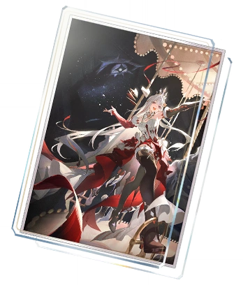

<meta charset="utf-8">
<meta name="viewport" content="width=device-width, initial-scale=1, viewport-fit=cover">
<title>NousLab</title>
<meta name="claude:viewport-fit-sides" content="cover">
<link rel="preconnect" href="https://fonts.googleapis.com">
<link rel="preconnect" href="https://fonts.gstatic.com" crossorigin>
<link rel="stylesheet" href="https://fonts.googleapis.com/css2?family=JetBrains+Mono:wght@400;500;600&family=Space+Grotesk:wght@700&display=swap">
<style>
/* 版面：上方類型列 → 中段「角色｜敵人｜結果」三欄等高對齊 → 下方速查；提升比較為「敵人條 → 隊伍卡 → 方案｜結果」 */
:root {
  --bg: #f3f4f6;
  --surface: #ffffff;
  --sunk: #f0f1f4;
  --ink: #16181d;
  --muted: #666d7a;
  --line: #e2e5ea;
  --accent: #b2741c;
  --accent-ink: #ffffff;
  --accent-soft: #f6ebd8;
  --good: #1d7a50;
  --warn: #b4432f;
  --off: #a3a9b3;
  --info: #2f7fc1;
  /* 文字用系統介面字（Windows 微軟正黑體、Mac 蘋方）；數字用 JetBrains Mono */
  --sans: system-ui, -apple-system, "Segoe UI", "PingFang TC", "Microsoft JhengHei UI", "Microsoft JhengHei", "Noto Sans TC", sans-serif;
  --mono: "JetBrains Mono", ui-monospace, Consolas, "Microsoft JhengHei", monospace;
  --r: 12px;
}
@media (prefers-color-scheme: dark) {
  :root:not([data-theme="light"]) {
    --bg: #0e1014; --surface: #16191f; --sunk: #1d2027; --ink: #eceef2; --muted: #9aa1ad; --line: #272b33;
    --accent: #e4ab4c; --accent-ink: #1a140a; --accent-soft: #33281a; --good: #5cc290; --warn: #ef8068; --off: #5c6370; --info: #6cb4ef;
    color-scheme: dark;
  }
}
:root[data-theme="dark"] {
  --bg: #0e1014; --surface: #16191f; --sunk: #1d2027; --ink: #eceef2; --muted: #9aa1ad; --line: #272b33;
  --accent: #e4ab4c; --accent-ink: #1a140a; --accent-soft: #33281a; --good: #5cc290; --warn: #ef8068; --off: #5c6370; --info: #6cb4ef;
  color-scheme: dark;
}
* { box-sizing: border-box; }
body { margin: 0; background: var(--bg); color: var(--ink); font-family: var(--sans); font-size: 14px; line-height: 1.5; font-variant-numeric: tabular-nums; -webkit-font-smoothing: antialiased; }
body::before { content: ""; position: fixed; inset: 0 0 auto; height: env(safe-area-inset-top, 0px); z-index: 10; background: var(--surface); }
.wrap {
  max-width: 1240px; margin: 0 auto;
  padding-left: max(16px, env(safe-area-inset-left, 0px));
  padding-right: max(16px, env(safe-area-inset-right, 0px));
}

/* 頂部 */
header.top { position: sticky; top: env(safe-area-inset-top, 0px); z-index: 5; background: var(--surface); border-bottom: 1px solid var(--line); }
.top-inner { display: flex; align-items: center; gap: 12px; padding-block: 10px; flex-wrap: wrap; }
.brand { display: flex; align-items: baseline; gap: 10px; min-width: 0; }
.brand h1 { font-size: 22px; font-weight: 700; margin: 0; letter-spacing: .02em; }
/* 專案名 NousLab：較大的字標，「Lab」用強調色，前面一個斜切方塊標記 */
.brand h1.logo { display: flex; align-items: center; gap: 10px; font: 700 30px/1 "Space Grotesk", var(--sans); letter-spacing: -.02em; }
.brand h1.logo span { font: inherit; color: inherit; padding: 0; border: 0; border-radius: 0; }
.brand h1.logo .logo-lab { color: var(--accent); }
.brand h1.logo .logo-mark { width: 34px; height: 34px; flex: none; background: var(--accent); -webkit-mask: var(--logo-img) center / contain no-repeat; mask: var(--logo-img) center / contain no-repeat; --logo-img: url(""); }
@media (max-width: 520px) { .brand h1.logo { font-size: 26px; } }
.brand span { font: 500 11px var(--mono); color: var(--muted); padding: 2px 6px; border: 1px solid var(--line); border-radius: 999px; }
/* 頁首三欄：字標｜分頁（置中）｜工具列；分頁是純文字連結，滑過才有底色 */
.top-inner { display: grid; grid-template-columns: 1fr auto 1fr; }
.tabs { display: flex; gap: 4px; }
.tabs button { border: 0; background: none; color: var(--muted); font: 500 14px var(--sans); padding: 7px 14px; border-radius: 8px; cursor: pointer; white-space: nowrap; transition: background-color .15s, color .15s; }
.tabs button:hover { background: var(--sunk); color: var(--ink); }
.tabs button[aria-selected="true"] { background: none; color: var(--ink); font-weight: 700; }
.menu-btn { display: none; justify-self: end; align-items: center; gap: 8px; height: 36px; padding: 0 10px 0 12px; border: 1px solid var(--line); border-radius: 8px; background: var(--sunk); color: var(--ink); font: 500 14px var(--sans); cursor: pointer; }
.menu-btn svg { width: 18px; height: 18px; color: var(--muted); }
/* 頁首右側工具列：繁簡切換、深色模式、GitHub */
.top-tools { display: flex; align-items: center; gap: 6px; justify-self: end; }
.top-tools:empty { display: none; }
.tool-btn { height: 36px; padding: 0 10px; display: inline-flex; align-items: center; justify-content: center; gap: 6px; border: 1px solid var(--line); border-radius: 8px; background: var(--sunk); color: var(--muted); font: 500 13px var(--sans); text-decoration: none; cursor: pointer; }
.tool-btn:hover { color: var(--ink); }
.tool-btn svg { width: 18px; height: 18px; flex: none; }
.top-lang, .top-theme, .top-link { width: 36px; padding: 0; }
.top-link:not([href]) { cursor: default; }
/* 手機選單最下方的繁簡與深色（桌機不顯示） */
.menu-extra { display: none; }
/* 手機：頁首縮成一行，分頁收進漢堡選單，展開時在頁首下方直列 */
@media (max-width: 760px) {
  .top-inner { grid-template-columns: 1fr auto auto; gap: 8px; }
  .menu-btn { display: inline-flex; }
  .tabs { display: none; order: 9; grid-column: 1 / -1; flex-direction: column; gap: 2px; padding-top: 6px; border-top: 1px solid var(--line); }
  header.top.open .tabs { display: flex; }
  .tabs button { text-align: left; padding: 11px 12px; }
  .top-tools .top-lang, .top-tools .top-theme { display: none; }
  .menu-extra { order: 10; grid-column: 1 / -1; gap: 8px; padding: 8px 0 2px; border-top: 1px solid var(--line); }
  header.top.open .menu-extra { display: flex; }
}

main { padding-block: 20px 32px; display: grid; gap: 16px; }
/* 頁尾：創作者與版權聲明 */
footer.foot { border-top: 1px solid var(--line); padding-block: 16px calc(24px + env(safe-area-inset-bottom, 0px)); color: var(--muted); font-size: 12px; display: flex; flex-wrap: wrap; justify-content: space-between; gap: 4px 16px; }
footer.foot b { color: var(--ink); font-weight: 600; }
/* 簡體轉換完成前先不顯示（見頁首 script） */
html.lang-wait body { visibility: hidden; }

/* 面板 */
.panel { background: var(--surface); border: 1px solid var(--line); border-radius: var(--r); padding: 16px; display: grid; gap: 14px; align-content: start; min-width: 0; }
.panel-h { display: flex; align-items: center; gap: 8px; min-height: 28px; }
.panel-h h2 { font-size: 15px; font-weight: 600; margin: 0; }
.panel-h .sub { color: var(--muted); font-size: 12px; }
.panel-h .end { margin-left: auto; display: flex; gap: 8px; align-items: center; }
.label-sm { font-size: 11px; font-weight: 600; letter-spacing: .06em; color: var(--muted); }
.hr { height: 1px; background: var(--line); margin-block: 8px; }

/* 欄位 */
.fields { display: grid; grid-template-columns: repeat(2, minmax(0, 1fr)); gap: 12px; }
.fields.wide { grid-template-columns: repeat(auto-fill, minmax(140px, 180px)); }
.f { display: grid; gap: 5px; min-width: 0; }
.f-label { display: flex; align-items: center; gap: 4px; font-size: 12px; color: var(--muted); min-width: 0; }
.f-label label { white-space: nowrap; overflow: hidden; text-overflow: ellipsis; }
.box { display: flex; align-items: center; height: 34px; border: 1px solid var(--line); border-radius: 8px; background: var(--sunk); overflow: hidden; }
.box:focus-within { border-color: var(--accent); box-shadow: 0 0 0 3px var(--accent-soft); background: var(--surface); }
.box input, .box select { flex: 1; min-width: 0; height: 100%; border: 0; background: transparent; color: var(--ink); font: 500 13px var(--mono); padding: 0 10px; outline: none; }
.box select { font-family: var(--sans); cursor: pointer; }
/* 下拉選單的選項跟著主題色，深色模式不會跳出白底 */
select option { background: var(--surface); color: var(--ink); }
/* 支援可自訂下拉選單的瀏覽器（Chromium 135+）：展開的選單也改成圓角、主題色 */
@supports (appearance: base-select) {
  .box select { appearance: base-select; display: flex; align-items: center; justify-content: space-between; gap: 6px; }
  .box select::picker-icon { color: var(--muted); font-size: 10px; }
  select::picker(select) { appearance: base-select; margin-top: 6px; padding: 4px; border: 1px solid var(--line); border-radius: 10px; background: var(--surface); color: var(--ink); box-shadow: 0 10px 28px rgb(0 0 0 / .22); }
  select option { padding: 7px 10px; border-radius: 6px; font: 500 13px var(--sans); }
  select option:hover, select option:focus-visible { background: var(--sunk); outline: none; }
  select option:checked { background: var(--accent-soft); color: var(--ink); }
  select option::checkmark { display: none; }
}
.box .u { padding-right: 10px; color: var(--muted); font: 12px var(--mono); }
.box input.txt { font-family: var(--sans); font-weight: 600; }
/* 暴擊率／暴擊傷害一格裝兩個數字，在窄卡片裡橫跨兩欄 */
.char .f-crit { grid-column: span 2; }
.box.duo input { padding-right: 2px; }
.box:has(input:disabled) { background: transparent; border-style: dashed; }
.box input:disabled { color: var(--muted); cursor: not-allowed; }
.box.duo .u { padding-right: 6px; }
.box .sep { color: var(--off); font: 500 14px var(--mono); padding: 0 2px; }
/* 算式條：每個乘區一格，乘號串起來，最後等於結果；滑過每格看算法 */
/* 算式：一行文字，滑過乘區名稱時出現淡底色並顯示算法 */
.eq { display: flex; flex-wrap: wrap; align-items: baseline; gap: 4px 6px; padding-top: 14px; border-top: 1px solid var(--line); font-size: 16px; line-height: 1.8; }
.term { position: relative; font-weight: 500; white-space: nowrap; cursor: help; padding: 0 4px; border-radius: 6px; }
.term:hover, .term:focus { background: var(--sunk); outline: none; }
.term.total { color: var(--accent); font-weight: 700; cursor: default; }
.term.total:hover { background: none; }
.op { color: var(--off); font: 400 15px var(--mono); }
.term::after { content: attr(data-tip); position: absolute; left: 0; top: calc(100% + 6px); z-index: 20; width: max-content; max-width: 280px; padding: 8px 10px; border-radius: 10px; border: 1px solid var(--line); background: var(--surface); color: var(--ink); box-shadow: 0 8px 24px rgb(0 0 0 / .18); font: 400 12px/1.5 var(--sans); white-space: normal; opacity: 0; pointer-events: none; }
.term:hover::after, .term:focus::after { opacity: 1; }
.term.total::after { left: auto; right: 0; }
/* 沒有說明文字的格子不畫提示框，避免出現空白小框 */
.term[data-tip=""]::after, .q[data-tip=""]::after { display: none; }
.eq-hint { flex-basis: 100%; font-size: 12px; color: var(--muted); }
.typebar .switch { margin-left: auto; }
.fx-body { display: grid; gap: 12px; padding-top: 14px; border-top: 1px solid var(--line); }
.fx-body .eq { border-top: 0; padding-top: 0; }
.type-note { font-size: 12px; color: var(--off); margin: -6px 0 0; }
.presets { display: flex; flex-wrap: wrap; gap: 8px; align-items: center; }
.na { font-size: 12px; color: var(--off); margin: 0; }
.switch { display: inline-flex; align-items: center; gap: 8px; font-size: 13px; cursor: pointer; user-select: none; }
.switch input { position: absolute; opacity: 0; width: 1px; height: 1px; }
.switch .track { position: relative; width: 34px; height: 20px; border-radius: 999px; background: var(--line); transition: background .15s; }
.switch .track::after { content: ""; position: absolute; top: 2px; left: 2px; width: 16px; height: 16px; border-radius: 50%; background: var(--surface); box-shadow: 0 1px 2px rgb(0 0 0 / .25); transition: transform .15s; }
.switch input:checked + .track { background: var(--accent); }
.switch input:checked + .track::after { transform: translateX(14px); }
.switch input:focus-visible + .track { outline: 2px solid var(--accent); outline-offset: 2px; }
.switch.sm { height: 34px; font-size: 12px; color: var(--muted); }
.switch.sm .track { width: 28px; height: 16px; }
.switch.sm .track::after { width: 12px; height: 12px; }
.switch.sm input:checked + .track::after { transform: translateX(12px); }
.toggle { display: flex; align-items: center; gap: 8px; height: 34px; padding: 0 10px; border: 1px solid var(--line); border-radius: 8px; background: var(--sunk); cursor: pointer; font-size: 13px; }
.toggle input { accent-color: var(--accent); width: 16px; height: 16px; margin: 0; }

/* 說明小圓點 */
.q { position: relative; flex: none; width: 15px; height: 15px; border-radius: 50%; border: 1px solid var(--off); color: var(--muted); font: 600 10px/13px var(--sans); text-align: center; cursor: help; }
.q::after { content: attr(data-tip); position: absolute; left: 50%; top: calc(100% + 6px); transform: translateX(-50%); z-index: 20; width: max-content; max-width: 220px; padding: 8px 10px; border-radius: 10px; border: 1px solid var(--line); background: var(--surface); color: var(--ink); box-shadow: 0 8px 24px rgb(0 0 0 / .18); font: 400 12px/1.5 var(--sans); text-align: left; white-space: normal; opacity: 0; pointer-events: none; }
.q:hover::after, .q:focus::after { opacity: 1; }
.q:hover, .q:focus { border-color: var(--muted); color: var(--ink); background: var(--sunk); outline: none; }

/* 按鈕 */
.btn { display: inline-flex; align-items: center; gap: 6px; height: 32px; padding: 0 12px; border: 1px solid var(--line); border-radius: 8px; background: var(--surface); color: var(--ink); font: 500 13px var(--sans); cursor: pointer; white-space: nowrap; }
.btn:hover { border-color: var(--accent); }
.btn.primary { background: var(--accent); border-color: var(--accent); color: var(--accent-ink); font-weight: 600; }
.btn:disabled { opacity: .4; cursor: not-allowed; }
.x { flex: none; width: 28px; height: 28px; border: 0; border-radius: 6px; background: none; color: var(--off); font-size: 18px; line-height: 1; cursor: pointer; }
.x:hover { background: var(--sunk); color: var(--warn); }
.x:disabled { visibility: hidden; }
button:focus-visible, input:focus-visible, select:focus-visible { outline: 2px solid var(--accent); outline-offset: 2px; }
/* 數字欄位不顯示上下 ±1 按鈕 */
input[type=number] { -moz-appearance: textfield; appearance: textfield; }
input[type=number]::-webkit-inner-spin-button, input[type=number]::-webkit-outer-spin-button { -webkit-appearance: none; margin: 0; }
.q:focus-visible { outline: 2px solid var(--muted); outline-offset: 2px; }

/* 類型切換 */
.typebar { display: flex; align-items: center; gap: 12px 16px; flex-wrap: wrap; }
.seg { display: inline-flex; flex-wrap: wrap; gap: 2px; padding: 3px; background: var(--sunk); border-radius: 10px; }
.seg button { border: 0; background: none; color: var(--muted); font: 500 15px var(--sans); padding: 7px 14px; border-radius: 8px; cursor: pointer; white-space: nowrap; }
.seg button[aria-pressed="true"] { background: var(--surface); color: var(--ink); box-shadow: 0 1px 2px rgb(0 0 0 / .1); }
.skip { font-size: 13px; color: var(--muted); min-width: 0; }
.skip b { color: var(--ink); font-weight: 600; }

/* 傷害計算版面 */
.calc-grid { display: grid; grid-template-columns: repeat(2, minmax(0, 1fr)) minmax(300px, 360px); gap: 16px; align-items: stretch; }
.calc-grid .span2 { grid-column: span 2; }
.sticky { position: sticky; top: calc(env(safe-area-inset-top, 0px) + 72px); }
@media (max-width: 1080px) {
  .calc-grid { grid-template-columns: repeat(2, minmax(0, 1fr)); }
  .calc-grid .result { grid-column: 1 / -1; order: -1; }
  .sticky { position: static; }
}
@media (max-width: 640px) {
  .calc-grid { grid-template-columns: minmax(0, 1fr); }
  .calc-grid .span2 { grid-column: auto; }
}

/* 結果 */
.hero { display: grid; gap: 2px; }
.hero .k { font-size: 12px; color: var(--muted); }
.hero .v { font: 600 34px/1.1 var(--mono); font-variant-numeric: tabular-nums; letter-spacing: -.02em; color: var(--accent); overflow-wrap: anywhere; }
.pair { display: grid; grid-template-columns: repeat(2, minmax(0, 1fr)); gap: 8px; }
.pair div { background: var(--sunk); border-radius: 8px; padding: 8px 10px; }
.pair span { display: block; font-size: 11px; color: var(--muted); }
.pair b { font: 600 16px var(--mono); font-variant-numeric: tabular-nums; }
.zones { display: grid; gap: 0; font-size: 13px; }
.zones div { display: flex; justify-content: space-between; gap: 12px; padding: 6px 0; border-bottom: 1px dashed var(--line); }
.zones div:last-child { border-bottom: 0; }
.zones span:last-child { font-family: var(--mono); font-variant-numeric: tabular-nums; white-space: nowrap; }
.callout { border-radius: 8px; background: var(--accent-soft); padding: 10px 12px; display: grid; gap: 4px; font-size: 13px; }
.callout .row2 { display: flex; justify-content: space-between; gap: 8px; }
.callout b { font-family: var(--mono); }
.hint { color: var(--muted); font-size: 12px; margin: 0; }
.import { display: flex; gap: 8px; }
.import .box { flex: 1; }

/* 速查表 */
.ref-wrap { overflow-x: auto; margin: 0 -4px; }
.ref { border-collapse: collapse; font-size: 13px; width: 100%; min-width: 620px; }
.ref th, .ref td { padding: 8px 10px; text-align: center; white-space: nowrap; border-bottom: 1px solid var(--line); }
.ref th:first-child, .ref td:first-child { text-align: left; }
.ref thead th { font-size: 12px; font-weight: 600; color: var(--muted); }
.ref tbody tr:last-child td { border-bottom: 0; }
.ref .cur { background: color-mix(in srgb, var(--sunk) 55%, transparent); }
.ref thead .cur { color: var(--ink); border-radius: 10px 10px 0 0; }
.ref tbody tr:last-child .cur { border-radius: 0 0 10px 10px; }
.tag-y { color: var(--accent); font-size: 15px; font-weight: 700; }
.tag-n { color: var(--off); font-size: 13px; }

/* 提升比較 */
.team { display: grid; grid-template-columns: repeat(auto-fill, minmax(260px, 1fr)); gap: 12px; }
.char { border: 1px solid var(--line); border-radius: var(--r); background: var(--surface); padding: 14px; display: grid; gap: 12px; align-content: start; min-width: 0; }
.char-top { display: grid; grid-template-columns: minmax(0, 1fr) minmax(0, 1fr); grid-auto-flow: column; grid-auto-columns: auto; gap: 8px; align-items: end; }
.char-top .x { margin-bottom: 3px; }
.add-card { border: 1.5px dashed var(--line); border-radius: var(--r); background: none; color: var(--muted); font: 500 13px var(--sans); cursor: pointer; min-height: 120px; }
.add-card:hover { border-color: var(--accent); color: var(--ink); }
.chip { font: 500 12px var(--mono); padding: 3px 8px; border-radius: 999px; background: var(--sunk); color: var(--muted); }
.chip.ok { color: var(--good); }
.chip.bad { color: var(--warn); }
.srcs { display: flex; flex-wrap: wrap; gap: 6px; }
.srcs label { display: inline-flex; align-items: center; gap: 6px; height: 30px; padding: 0 10px; border: 1px solid var(--line); border-radius: 999px; font-size: 13px; cursor: pointer; }
.srcs label:has(input:checked) { border-color: var(--accent); background: var(--accent-soft); }
.srcs input { accent-color: var(--accent); margin: 0; }

.cmp-grid { display: grid; grid-template-columns: minmax(0, 1fr) minmax(0, 1fr); gap: 16px; align-items: start; }
.cmp-grid .result { position: sticky; top: calc(env(safe-area-inset-top, 0px) + 72px); }
@media (max-width: 900px) { .cmp-grid { grid-template-columns: minmax(0, 1fr); } .cmp-grid .result { order: -1; position: static; } }
.scheme { border: 1px solid var(--line); border-radius: 10px; padding: 12px; display: grid; gap: 10px; }
.scheme-top { display: flex; gap: 8px; align-items: center; }
.scheme-top .box { flex: 1; }
.change { display: grid; grid-template-columns: minmax(0, 1.3fr) 92px minmax(0, 1fr) 28px; gap: 8px; align-items: center; }
@media (max-width: 520px) { .change { grid-template-columns: minmax(0, 1fr) 92px 28px; } .change .scope { grid-column: 1 / 3; grid-row: 2; } }

.rank { display: grid; gap: 14px; }
.rk { display: grid; gap: 6px; }
.rk-top { display: flex; align-items: baseline; gap: 10px; }
.rk-top .n { font: 600 12px var(--mono); color: var(--muted); width: 18px; }
.rk-top .name { flex: 1; min-width: 0; font-weight: 500; overflow: hidden; text-overflow: ellipsis; white-space: nowrap; }
.rk-top .pct { font: 600 18px var(--mono); font-variant-numeric: tabular-nums; color: var(--good); }
.rk-top .pct.zero { color: var(--off); }
.bar { height: 6px; border-radius: 3px; background: var(--sunk); overflow: hidden; margin-left: 28px; }
.bar i { display: block; height: 100%; border-radius: 3px; background: var(--accent); }
.rk:first-child .bar i { background: var(--good); }
.bd { margin-left: 28px; }
.bd summary { cursor: pointer; font-size: 12px; color: var(--muted); }
.bd table { width: 100%; border-collapse: collapse; font-size: 12px; margin-top: 6px; }
.bd th { text-align: right; font-weight: 500; color: var(--muted); padding: 4px 0; }
.bd th:first-child, .bd td:first-child { text-align: left; }
.bd td { text-align: right; padding: 4px 0; border-top: 1px dashed var(--line); font-family: var(--mono); font-variant-numeric: tabular-nums; }
.bd td:first-child { font-family: var(--sans); }
.bd td.why { text-align: left; color: var(--off); font-family: var(--sans); border-top: 0; padding-top: 0; }
@media (prefers-reduced-motion: no-preference) { .bar i { transition: width .25s ease; } }

/* 排軸：左「設定、角色」，右上「行動順序」 */
.spd-opts { display: flex; flex-wrap: nowrap; align-items: center; gap: 6px; }
@media (max-width: 560px) { .spd-opts { flex-wrap: wrap; } }
.spd-opts { flex-wrap: wrap; }
/* 設定區：不顯示勾選框，生效時亮、沒生效時暗；每格依文字寬度 */
.spd-opts .toggle { position: relative; flex: 0 0 auto; justify-content: center; height: 30px; padding: 0 10px; gap: 6px; font-size: 12px; white-space: nowrap; color: var(--muted); opacity: .6; transition: opacity .15s, background .15s, border-color .15s; }
.spd-opts .toggle input { position: absolute; inset: 0; width: 100%; height: 100%; opacity: 0; cursor: pointer; }
.spd-opts .toggle:has(input:checked) { opacity: 1; color: var(--ink); border-color: var(--accent); background: var(--accent-soft); }
.spd-opts .toggle:has(input:focus-visible) { outline: 2px solid var(--accent); outline-offset: 2px; }
.spd-opts .toggle .q { position: relative; z-index: 1; }
/* 角色列表：欄位標題與每個角色共用同一組欄（subgrid），欄位一定對齊；欄寬不夠時每個角色改成兩行 */
.spd-chars { container-type: inline-size; }
/* 第一欄與最後一欄多留 11px，給每列外框的左右內距（10px）與框線（1px），頭像才不會被擠扁 */
.spd-list { --cols: 45px minmax(0, 1fr) 156px 84px 28px 39px; display: grid; grid-template-columns: var(--cols); gap: 8px; }
.spd-hdr, .spd-item, .spd-add { grid-column: 1 / -1; }
.spd-item { display: grid; grid-template-columns: subgrid; row-gap: 6px; padding: 8px 10px; border: 1px solid var(--line); border-radius: 10px; background: var(--surface); }
.spd-item > .spd-row { grid-column: 1 / -1; }
/* 進階設定從角色名稱那一欄開始，不貼在頭像下方 */
.spd-item > .adv { grid-column: 2 / -1; }
.spd-hdr, .spd-item > .spd-row { display: grid; grid-template-columns: subgrid; column-gap: 8px; align-items: center; }
.spd-hdr { padding: 8px 10px; border: 1px solid var(--line); border-radius: 10px; background: var(--sunk); font-size: 11px; font-weight: 600; letter-spacing: .04em; color: var(--muted); }
.spd-hdr > span { display: flex; align-items: center; gap: 4px; height: 16px; white-space: nowrap; }
.c-av { grid-column: 1; display: flex; } .c-char { grid-column: 2; min-width: 0; } .c-spd { grid-column: 3; min-width: 0; } .c-eid, .c-nm { grid-column: 4; min-width: 0; } .c-mo { grid-column: 5; } .c-x { grid-column: 6; }
@supports not (grid-template-columns: subgrid) { .spd-hdr, .spd-item > .spd-row { grid-template-columns: var(--cols); } }
.adv-inline { display: flex; flex-wrap: wrap; align-items: center; gap: 6px; font-size: 12px; color: var(--muted); }
.adv-inline .box.n { width: 64px; }
.adv-inline .box.n input { padding: 0 4px 0 8px; }
.adv-inline .box.n.sm { width: 46px; }
.adv-inline .box.n.sm input { padding: 0 6px; text-align: center; }
/* 速度格：左邊「SPD」，中間分隔線，右邊「面板 → 戰鬥中」 */
.c-spd .pre { flex: none; align-self: stretch; display: flex; align-items: center; padding: 0 8px; border-right: 1px solid var(--line); font: 600 10px var(--mono); letter-spacing: .04em; color: var(--muted); }
.c-spd .box input { padding: 0 6px 0 8px; }
/* 排軸上的額外回合：和阿哈時刻一樣整列加框，用淺藍色 */
.tl li.ex { background: color-mix(in srgb, var(--info) 12%, transparent); box-shadow: inset 0 0 0 1px color-mix(in srgb, var(--info) 50%, transparent); }
.tl li.ex .nm, .tl li.ex .av { color: var(--info); font-weight: 600; }
/* 火花 2 星魂（阿哈時刻結束時的額外回合）用紅色 */
.tl li.ex.ex-r { background: color-mix(in srgb, var(--warn) 12%, transparent); box-shadow: inset 0 0 0 1px color-mix(in srgb, var(--warn) 50%, transparent); }
.tl li.ex.ex-r .nm, .tl li.ex.ex-r .av { color: var(--warn); }
.lc-r { display: grid; gap: 4px; min-width: 0; }
/* 單體拉條：勾選一行，下面「對象」「行動提前」兩格並排，不會換成三行 */
.pull-grid { display: grid; grid-template-columns: minmax(0, 1fr) 76px; gap: 8px; }
.pull-grid .box.n { width: 100%; }
.pull-pct { height: 34px; display: flex; align-items: center; font: 600 14px var(--mono); color: var(--ink); }
.lc-name { font-size: 12px; font-weight: 600; color: var(--ink); white-space: nowrap; }
/* 進階設定的文字大小與格式統一：段落標題 13px 粗體、欄位名稱與說明 12px */
.adv .label-sm { font-size: 13px; font-weight: 600; letter-spacing: 0; color: var(--ink); }
.adv .f-label, .adv .adv-inline, .adv .hint { font-size: 12px; color: var(--muted); }
.adv .more-sum { font-family: var(--sans); font-size: 12px; color: var(--muted); }
.adv .f { gap: 4px; }
.adv-col { gap: 10px; }
.lc-pick .seg { flex-wrap: nowrap; }
.lc-pick .seg { padding: 2px; }
.lc-pick .seg.sm button { padding: 2px 6px; font-size: 11px; }
/* 疊影按鈕依內容寬度，不撐滿 */
.lc-r .seg { justify-self: start; }
.adv .hint.warn-sm { color: var(--warn); font-size: 11px; margin-top: 2px; }
.adv .hint.warn-sm[hidden] { display: none; }
/* 說明欄：觸發中的亮起（強調色框＋底色），其餘變暗 */
.fx-list { display: grid; gap: 12px; }
.fx-g { display: grid; gap: 6px; }
.fx-g ul { list-style: none; margin: 0; padding: 0; display: grid; gap: 6px; }
.fx-i { padding: 8px 10px; border: 1px solid var(--line); border-radius: 8px; background: var(--sunk); opacity: .55; transition: opacity .15s, border-color .15s, background .15s; }
.fx-i b { font-size: 13px; color: var(--ink); }
.fx-i .tag { margin-left: 6px; padding: 0 6px; border-radius: 999px; font-size: 11px; background: var(--accent); color: var(--accent-ink); }
.fx-i p { margin: 4px 0 0; font-size: 12px; line-height: 1.55; color: var(--muted); }
.fx-i.on { opacity: 1; border-color: var(--accent); background: var(--accent-soft); }
.fx-i.on p { color: var(--ink); }
.adv-inline .toggle { height: 34px; }
.lc-pick { display: flex; align-items: center; gap: 8px; }
.lc-img { width: 40px; height: 47px; object-fit: contain; border-radius: 6px; background: var(--sunk); }
.ult-dot.pearl:checked { border-color: var(--good); background: var(--good); }
.ult-dot.pearl:hover { border-color: var(--good); }
.tl li .nm { display: flex; align-items: center; gap: 2px; }
.tl li .nm-t { min-width: 0; overflow: hidden; text-overflow: ellipsis; white-space: nowrap; }
/* 「（額外）」不跟名字一起被截掉，名字先縮 */
.tl li .ex-t { flex: none; white-space: nowrap; }
.tl li .tag, .tl li .av-img.xs { flex: none; }
.tl li .av { flex: none; }
.tl > *, .tl li { min-width: 0; }
.switch.off { opacity: .45; cursor: not-allowed; }
/* 進階設定：左「行動提前」｜分隔線｜右「終結技」 */
.adv-grid { display: grid; grid-auto-flow: column; grid-auto-columns: minmax(0, 1fr); gap: 0 16px; }
.adv-col { display: grid; gap: 8px; align-content: start; min-width: 0; }
.adv-col + .adv-col { border-left: 1px solid var(--line); padding-left: 16px; }
.adv .f-adv .box { max-width: 110px; }
.btn.sm { height: 28px; padding: 0 10px; font-size: 12px; gap: 4px; }
.btn.sm .av-img.xs { margin-left: 0; }
.btn.on { border-color: var(--accent); background: var(--accent-soft); color: var(--ink); }
/* 真珠第 1 次大招：小型，放在行動順序標題列右側 */
.pearl-ctl { display: flex; align-items: center; gap: 4px; font-size: 12px; color: var(--muted); white-space: nowrap; }
.pearl-ctl .av-img.xs { margin-left: 0; }
.pearl-ctl .box { height: 28px; }
.pearl-ctl .box select, .pearl-ctl .box input { font-size: 12px; padding: 0 6px; }
.pearl-ctl .pc-who { width: 104px; }
.pearl-ctl .pc-n { width: 44px; }
.spd-sw .sep-v { width: 1px; height: 20px; background: var(--line); }
@media (max-width: 640px) { .pearl-ctl { flex-wrap: wrap; } .spd-sw .sep-v { display: none; } }
/* 進階設定按鈕：在角色同一列，展開後內容接在下方 */
.more-btn { font-size: 13px; transition: transform .15s; }
.more-btn.on { color: var(--accent); transform: rotate(180deg); }
.more-btn:hover { color: var(--ink); background: var(--sunk); }
.spd-item .adv { padding-top: 8px; border-top: 1px dashed var(--line); }
.spd-hdr span { display: flex; align-items: center; gap: 4px; min-height: 16px; line-height: 16px; white-space: nowrap; }
.spd-hdr .q { flex: none; }
.panel-h h2 { font-size: 18px; }

.spd-row select { white-space: nowrap; overflow: hidden; text-overflow: ellipsis; }
.add-card.spd-add { min-height: 44px; }
@container (max-width: 520px) {
  .spd-list { --cols: 45px minmax(0, 1fr) 84px 39px; }
  .spd-hdr { display: none; }
  .c-eid, .c-nm { grid-column: 3; grid-row: 1; } .c-x { grid-column: 4; grid-row: 1; }
  .c-spd { grid-column: 2 / 4; grid-row: 2; } .c-mo { grid-column: 4; grid-row: 2; }
  /* 手機：兩行之間留空隙，框不黏在一起；進階設定用滿整張卡片寬 */
  .spd-item > .spd-row { row-gap: 8px; }
  .spd-item > .adv { grid-column: 1 / -1; }
  .adv-grid { grid-auto-flow: row; }
  .adv-col + .adv-col { border-left: 0; padding-left: 0; border-top: 1px solid var(--line); padding-top: 8px; margin-top: 8px; }
}
/* 點排軸：可以點的列滑過時加底色 */
.tl li.pickable { cursor: pointer; }
.tl li.pickable:hover, .tl li.pickable:focus-visible { background: var(--sunk); outline: none; }
.tl li.aha.pickable:hover { background: var(--accent-soft); }
.av-img.xs { width: 16px; height: 16px; margin-left: 4px; vertical-align: -3px; box-shadow: 0 0 0 1px var(--accent); }
.seg.sm button { font-size: 12px; padding: 4px 10px; }
.spd-grid .panel-h { flex-wrap: wrap; row-gap: 8px; }
.spd-grid .panel-h h2 { white-space: nowrap; }
#spd-result .panel-h h2, #spd-result .panel-h > .sub { white-space: nowrap; }
@media (max-width: 640px) { #spd-result .spd-sw { margin-left: 0; flex-basis: 100%; justify-content: flex-start; } }
.more-sum:empty { display: none; }
.spd-sel { display: flex; align-items: center; gap: 6px; font-size: 13px; color: var(--muted); }
.spd-sel .box { width: 110px; }
.toggle:has(input:disabled) { opacity: .45; cursor: not-allowed; }
.spd-grid { display: grid; grid-template-columns: minmax(0, 1fr) minmax(0, 1fr); gap: 16px; align-items: start; }
.spd-grid .left { display: grid; gap: 16px; min-width: 0; }
.spd-grid .result { position: sticky; top: calc(env(safe-area-inset-top, 0px) + 72px); }
@media (max-width: 900px) { .spd-grid { grid-template-columns: minmax(0, 1fr); } .spd-grid .result { position: static; order: -1; } }
.spd-team { display: grid; grid-template-columns: repeat(auto-fill, minmax(230px, 1fr)); gap: 12px; }
.spd-card { gap: 10px; }
.spd-head { display: flex; align-items: center; gap: 6px; }
.spd-head .box { flex: 1; min-width: 0; }
.box .bs { padding-right: 10px; font: 500 12px var(--mono); color: var(--muted); white-space: nowrap; }
.spd-head .box:has(select:disabled) { background: var(--sunk); border-style: solid; }
.spd-head select:disabled { color: var(--ink); cursor: default; opacity: 1; }
/* 阿哈時刻速度：大字，點擊展開計算過程 */
.aha-fx { border: 1px solid var(--line); border-left: 3px solid var(--accent); border-radius: 10px; background: var(--sunk); }
.aha-fx > summary { display: flex; align-items: center; gap: 12px; cursor: pointer; list-style: none; padding: 10px 14px; }
.aha-fx > summary::-webkit-details-marker { display: none; }
.aha-fx .kv { display: grid; gap: 2px; }
.aha-fx .k { font-size: 12px; color: var(--muted); }
.aha-fx .v { font: 600 30px/1.1 var(--mono); color: var(--accent); letter-spacing: -.02em; }
.aha-fx .more-tip { margin-left: auto; display: inline-flex; align-items: center; gap: 4px; height: 28px; padding: 0 10px; border: 1px solid var(--line); border-radius: 999px; background: var(--surface); font-size: 12px; color: var(--muted); white-space: nowrap; }
.aha-fx .more-tip::before { content: "▸"; font-size: 10px; transition: transform .15s; }
.aha-fx[open] .more-tip::before { transform: rotate(90deg); }
.aha-fx > summary:hover .more-tip { color: var(--ink); border-color: var(--accent); }
.aha-fx > .more-body { padding: 0 14px 12px; }
.spd-calc { margin: 0; font: 500 12px/1.6 var(--mono); color: var(--muted); overflow-wrap: anywhere; }
.aha-fx .more-body { gap: 6px; padding-top: 0; }
.aha-fx .zones { font-size: 12px; }
.aha-fx .zones div { padding: 3px 0; }
.aha-fx .hint { font-size: 11px; }
.tl-grid { display: grid; grid-template-columns: repeat(2, minmax(0, 1fr)); gap: 12px; align-items: start; }
@media (max-width: 520px) { .tl-grid { grid-template-columns: minmax(0, 1fr); } }
.tl { border: 1px solid var(--line); border-radius: 10px; padding: 10px; display: grid; gap: 8px; min-width: 0; }
.tl-h { display: flex; align-items: baseline; gap: 8px; padding: 0 4px 6px; border-bottom: 1px solid var(--line); font-weight: 600; }
.tl-h span { font: 500 12px var(--mono); color: var(--muted); }
.tl ol { list-style: none; margin: 0; padding: 0; display: grid; gap: 2px; }
.tl li { display: flex; align-items: center; gap: 8px; padding: 6px 8px; border-radius: 8px; font-size: 13px; }
.tl li .no { flex: none; width: 20px; font: 500 11px var(--mono); color: var(--off); }
.av-img { flex: none; width: 24px; height: 24px; border-radius: 50%; object-fit: cover; background: var(--sunk); box-shadow: 0 0 0 1.5px var(--accent); }
.av-img.lg { width: 34px; height: 34px; }
.aha-img { display: inline-block; background: url("頭像/阿哈時刻原圖.webp") center / cover no-repeat; }
/* 遺器、位面飾品用圖示選擇；選中時強調色外框，滑過顯示名稱 */
.pick { display: flex; flex-wrap: wrap; gap: 6px; align-items: center; }
.pick-i { position: relative; display: inline-grid; place-items: center; width: 40px; height: 40px; border: 1px solid var(--line); border-radius: 8px; background: var(--sunk); cursor: pointer; }
.pick-i input { position: absolute; opacity: 0; width: 1px; height: 1px; }
.pick-i img { width: 32px; height: 32px; object-fit: contain; }
.pick-i:hover { border-color: var(--muted); }
.pick-i:has(input:checked) { border-color: var(--accent); background: var(--accent-soft); box-shadow: 0 0 0 2px var(--accent-soft); }
.pick-i:has(input:focus-visible) { outline: 2px solid var(--accent); outline-offset: 2px; }
.pick-none { font-size: 12px; color: var(--muted); }
.fields .f-wide { grid-column: 1 / -1; }
.av-txt { display: inline-grid; place-items: center; font-size: 12px; color: var(--muted); border: 1px solid var(--line); }
.av-txt.lg { font-size: 14px; }
.tl li.start .av-img { visibility: hidden; }
.tl li .nm { flex: 1; min-width: 0; overflow: hidden; text-overflow: ellipsis; white-space: nowrap; }
.tl li .av { min-width: 44px; text-align: right; font: 500 13px var(--mono); color: var(--muted); }
.tl li.aha { background: var(--accent-soft); box-shadow: inset 0 0 0 1px color-mix(in srgb, var(--accent) 45%, transparent); }
.tl li.aha .nm, .tl li.aha .av { color: var(--accent); font-weight: 600; }
/* 排軸上的「大招」勾選：平時淡，滑過或勾選時明顯 */
.ult-dot { appearance: none; -webkit-appearance: none; flex: none; width: 14px; height: 14px; margin: 0; border: 1.5px solid var(--off); border-radius: 50%; background: transparent; cursor: pointer; }
.ult-dot:hover { border-color: var(--accent); }
.ult-dot:checked { border-color: var(--accent); background: var(--accent); box-shadow: inset 0 0 0 2px var(--surface); }
/* 真珠第一次終結技：菱形，綠色，和阿哈終結技的圓鈕區分 */
.pearl-dot { appearance: none; -webkit-appearance: none; flex: none; width: 11px; height: 11px; margin: 0 2px; border: 1.5px solid var(--off); border-radius: 2px; transform: rotate(45deg); background: transparent; cursor: pointer; }
.pearl-dot:hover { border-color: var(--good); }
.pearl-dot:checked { border-color: var(--good); background: var(--good); }
.tl li.start { color: var(--muted); }
.tl li .tag { margin-left: 4px; padding: 0 5px; border-radius: 999px; background: var(--sunk); font-size: 11px; color: var(--muted); }
.spd-sw { flex-wrap: wrap; justify-content: flex-end; gap: 4px 10px; }
/* 角色卡的進階設定（行動提前等）：不加框，一行小字，收合時顯示合計 */
.more summary { display: flex; align-items: center; gap: 6px; padding: 2px 0; cursor: pointer; font-size: 12px; color: var(--muted); list-style: none; width: fit-content; }
.more summary:hover { color: var(--ink); }
.more summary::-webkit-details-marker { display: none; }
.more summary::before { content: "▸"; font-size: 10px; transition: transform .15s; }
.more[open] summary::before { transform: rotate(90deg); }
.more-sum { font-family: var(--mono); }
.more summary { flex-wrap: wrap; row-gap: 0; }
.more-t { white-space: nowrap; }
.more-sum::before { content: "·"; margin-right: 6px; }
.more-body { display: grid; gap: 10px; padding-top: 8px; }

/* 回能計算：左「輸入」｜右「結果」；面板裡再分小卡（格中格，同提升比較的角色卡），小卡上下排列 */
.en-grid { display: grid; grid-template-columns: minmax(0, 1fr) minmax(0, 1fr); gap: 16px; align-items: start; }
.en-grid .left { display: grid; gap: 16px; min-width: 0; }
.en-grid .result { position: sticky; top: calc(env(safe-area-inset-top, 0px) + 72px); }
@media (max-width: 900px) { .en-grid { grid-template-columns: minmax(0, 1fr); } .en-grid .result { position: static; order: -1; } }
.en-cards { display: grid; gap: 10px; }
.en-card { border: 1px solid var(--line); border-radius: 10px; background: var(--surface); padding: 12px; display: grid; gap: 8px; align-content: start; min-width: 0; }
.en-card-h { display: flex; align-items: center; gap: 4px; min-height: 26px; font-size: 13px; font-weight: 600; }
.en-card-end { margin-left: auto; }
.en-fields { display: grid; grid-template-columns: repeat(auto-fit, minmax(84px, 1fr)); gap: 6px; }
.en-fields .toggle.en-lit { width: 100%; }
.panel-h .toggle.en-lit { height: 28px; }
/* 行動列：名稱｜單次回能｜每動｜自動，三張卡的欄位上下對齊 */
.en-a { display: grid; grid-template-columns: 4.6em minmax(0, 1fr) minmax(0, 1fr) 52px; gap: 6px; align-items: center; }
.en-span { grid-column: 3 / -1; }
.en-n { font-size: 13px; }
.en-each { font-size: 12px; color: var(--muted); padding-left: 2px; }
/* 回合行動「每動」格：選中的是強調色，其他虛線 */
.en-use { height: 34px; border: 1px dashed var(--line); border-radius: 8px; background: none; color: var(--off); font: 500 12px var(--sans); cursor: pointer; text-align: left; padding: 0 10px; white-space: nowrap; overflow: hidden; text-overflow: ellipsis; }
.en-use:hover { border-color: var(--accent); color: var(--ink); }
.en-use[aria-pressed="true"] { border: 1px solid var(--accent); background: var(--accent-soft); color: var(--ink); font-weight: 600; }
/* 點亮式開關與「自動」鈕：生效時亮（強調色框＋底色），沒生效時暗，同可視排軸的隊伍設定 */
.toggle.en-lit, .en-auto { position: relative; justify-content: center; border: 1px solid var(--line); border-radius: 8px; background: var(--sunk); color: var(--muted); opacity: .6; transition: opacity .15s, background .15s, border-color .15s; }
.toggle.en-lit { width: fit-content; white-space: nowrap; font-size: 12px; gap: 6px; }
.toggle.en-lit input { position: absolute; inset: 0; width: 100%; height: 100%; opacity: 0; cursor: pointer; margin: 0; }
.toggle.en-lit .q { position: relative; z-index: 1; }
.toggle.en-lit:has(input:checked), .en-auto[aria-pressed="true"] { opacity: 1; color: var(--ink); border-color: var(--accent); background: var(--accent-soft); }
.toggle.en-lit:has(input:focus-visible) { outline: 2px solid var(--accent); outline-offset: 2px; }
.en-auto { height: 34px; padding: 0 6px; font: 500 12px var(--sans); cursor: pointer; }
.en-auto:hover { opacity: 1; border-color: var(--accent); }
.en-card-h .en-auto { height: 26px; padding: 0 10px; }
.en-opts { display: flex; flex-wrap: wrap; gap: 6px; }
/* 結果下方說明：一行，放不下時省略，滑過看全文 */
.en-note { white-space: nowrap; overflow: hidden; text-overflow: ellipsis; }
.en-int-panel { padding: 12px 16px; }
.en-int-panel .more-body, .en-int-panel details > .hint { margin: 8px 0; }
/* 額外回能：每項一張小卡，最後一格虛線新增卡 */
.en-xs { display: grid; grid-template-columns: repeat(auto-fill, minmax(230px, 1fr)); gap: 10px; }
.en-xc { gap: 6px; padding: 10px; }
.en-xc-top { display: grid; grid-template-columns: minmax(0, 1fr) auto 28px; gap: 6px; align-items: center; }
.en-xc-row { display: grid; grid-template-columns: minmax(0, 1fr) minmax(0, 1fr); gap: 6px; }
.en-x-sum:empty { display: none; }
.add-card.en-add { min-height: 44px; }
.en-xs:has(.en-xc) .add-card.en-add { min-height: 92px; }
.en-ref-list { list-style: none; margin: 6px 0 0; padding: 0; display: grid; grid-template-columns: repeat(auto-fill, minmax(230px, 1fr)); gap: 6px; }
.en-ref-list li { display: flex; gap: 8px; align-items: flex-start; padding: 8px 10px; border: 1px solid var(--line); border-radius: 8px; background: var(--sunk); }
.en-ref-list b { font-size: 12px; }
.en-ref-hint { display: block; font-size: 11px; color: var(--accent); }
.en-ref-list p { margin: 2px 0 0; font-size: 12px; line-height: 1.5; color: var(--muted); }
.lc-ico { flex: none; width: 22px; height: 22px; object-fit: contain; border-radius: 4px; }
/* 結果：最可能（大字＋是否需要交互）｜首動開大燈號 */
.en-hero { display: flex; flex-wrap: wrap; align-items: flex-end; justify-content: space-between; gap: 8px 12px; padding-bottom: 12px; border-bottom: 1px solid var(--line); }
.chip.info { color: var(--info); }
.en-lamp { display: inline-flex; align-items: center; gap: 8px; height: 34px; padding: 0 12px; border: 1px solid var(--line); border-radius: 999px; background: var(--sunk); color: var(--muted); font-size: 13px; font-weight: 600; white-space: nowrap; opacity: .55; }
.en-lamp .dot { width: 10px; height: 10px; border-radius: 50%; background: var(--off); }
.en-lamp.on { opacity: 1; color: var(--ink); border-color: var(--good); background: color-mix(in srgb, var(--good) 14%, transparent); }
.en-lamp.on .dot { background: var(--good); box-shadow: 0 0 0 3px color-mix(in srgb, var(--good) 25%, transparent), 0 0 10px var(--good); }
/* 交互燈號：需要交互亮紅燈 */
.en-lamp.on.bad { border-color: var(--warn); background: color-mix(in srgb, var(--warn) 14%, transparent); }
.en-lamp.on.bad .dot { background: var(--warn); box-shadow: 0 0 0 3px color-mix(in srgb, var(--warn) 25%, transparent), 0 0 10px var(--warn); }
/* 最上方：左「最可能」大字，右邊兩個燈號並排，跟大字底部對齊；窄時燈號換到大字下面 */
.en-lamps { display: flex; flex-wrap: wrap; gap: 6px; }
.en-pair3 { display: grid; grid-template-columns: repeat(3, minmax(0, 1fr)); gap: 8px; }
.en-pair3 div { background: var(--sunk); border-radius: 8px; padding: 8px 10px; min-width: 0; }
.en-pair3 span { display: block; font-size: 11px; color: var(--muted); }
.en-pair3 b { font: 600 15px var(--mono); white-space: nowrap; }
.en-blk-h { display: flex; align-items: baseline; justify-content: space-between; gap: 8px; }
.en-blk-h b { font-size: 13px; }
.en-blk-h span { font-size: 12px; color: var(--muted); }
.en-bars { display: grid; gap: 4px; }
.en-b { display: grid; grid-template-columns: 4.2em minmax(0, 1fr) 4.5em; gap: 8px; align-items: center; font-size: 12px; }
.en-bl { color: var(--muted); white-space: nowrap; }
.en-bt { height: 8px; border-radius: 4px; background: var(--sunk); overflow: hidden; }
.en-bt i { display: block; height: 100%; border-radius: 4px; background: var(--accent); }
.en-b.full .en-bt i { background: var(--good); }
.en-b.full .en-bl, .en-b.full .en-bv { color: var(--good); font-weight: 600; }
.en-bv { text-align: right; font-family: var(--mono); }
.en-gap { padding: 8px 10px; border: 1px solid var(--line); border-radius: 8px; background: var(--sunk); }
.en-gap.on { opacity: 1; border-color: var(--accent); background: var(--accent-soft); }
.en-gap .row2 { display: flex; align-items: center; justify-content: space-between; gap: 8px; font-size: 13px; }
/* 第一行粗體、第二行小灰字，兩個差額框（合理／偏多）都一樣，只用框線與底色分亮暗 */
.en-gap b { font-weight: 700; color: var(--ink); }
.en-gap p { margin: 4px 0 0; font-size: 12px; line-height: 1.5; color: var(--muted); }
.en-gap .tag { flex: none; padding: 0 6px; border-radius: 999px; font-size: 11px; background: var(--off); color: var(--surface); }
.en-gap.on .tag { background: var(--accent); color: var(--accent-ink); }
/* 計算明細：只寫數字，滑過看來源；說明框往左展開，不超出頁面 */
.en-detail .term { padding: 0 2px; font-weight: 500; }
.en-detail .term::after { left: auto; right: 0; }
.en-detail span:last-child { font-family: var(--mono); font-size: 12px; }
.en-detail span:last-child { white-space: normal; text-align: right; }

/* 速度閾值：左邊角色面板（終結技、行動提前）與隊友（拉條＋各欄次數），右邊一張套用全部效果的表；窄螢幕上下排，表在上 */
.th-wrap { display: grid; grid-template-columns: minmax(0, 1fr) minmax(0, 1fr); gap: 16px; align-items: start; }
.th-side { display: grid; gap: 16px; min-width: 0; }
@media (max-width: 900px) { .th-wrap { grid-template-columns: minmax(0, 1fr); } #th-result { order: -1; } }
/* 表格格子固定大小：欄寬平均、每列同高（有「+還差」的格子也不撐高） */
.th-t { table-layout: fixed; }
.th-t th:first-child { width: 56px; }
.th-t thead th { white-space: normal; vertical-align: bottom; }
.th-t tbody th, .th-t tbody td { height: 40px; vertical-align: middle; }
.th-row { display: grid; grid-template-columns: repeat(auto-fit, minmax(300px, 1fr)); gap: 10px; }
.th-row .toggle.en-lit { width: 100%; }
.th-mates { grid-template-columns: repeat(auto-fill, minmax(300px, 1fr)); }
.th-card { overflow-x: auto; }
@media (max-width: 480px) { .th-t { font-size: 11px; } .th-t th:first-child { width: 44px; } }
.th-t { width: 100%; border-collapse: collapse; font-size: 12px; }
.th-t th, .th-t td { padding: 5px 6px; text-align: right; border-bottom: 1px solid var(--line); white-space: nowrap; }
.th-t thead th { font-size: 11px; font-weight: 600; color: var(--muted); vertical-align: bottom; }
.th-t thead th span { display: block; font: 500 10px var(--mono); color: var(--off); }
.th-t th:first-child { text-align: left; }
.th-t tbody th { font-weight: 500; color: var(--muted); }
.th-t tbody tr:last-child th, .th-t tbody tr:last-child td { border-bottom: 0; }
.th-t td { font-family: var(--mono); color: var(--muted); }
.th-t td.ok { color: var(--good); font-weight: 600; }
.th-t td.nx { color: var(--accent); font-weight: 600; }
.th-q { margin-left: 4px; padding: 0 5px; border-radius: 999px; background: var(--sunk); font-size: 10px; color: var(--accent); }
@media (max-width: 480px) { .th-cards { grid-template-columns: minmax(0, 1fr); } .th-t th, .th-t td { padding: 4px 3px; } }
</style>
<script>
// 深色模式：沒選過就跟系統；選過就記在這台瀏覽器。放在最前面，避免先閃一下另一種顏色
try { const t = localStorage.getItem('nouslab-theme'); if (t === 'dark' || t === 'light') document.documentElement.dataset.theme = t; } catch {}
// 已選簡體：先藏起頁面並同步載入 OpenCC，轉換完再顯示，避免先閃一下繁體（最多藏 2 秒）
try { if (localStorage.getItem('nouslab-lang') === 'hans') { document.documentElement.classList.add('lang-wait'); document.write('<script src="https://cdn.jsdelivr.net/npm/opencc-js@1.0.5/dist/umd/t2cn.js"><\/script>'); setTimeout(() => document.documentElement.classList.remove('lang-wait'), 2000); } } catch {}
</script>

<header class="top">
  <div class="wrap top-inner">
    <div class="brand"><h1 class="logo" aria-label="NOUSLAB"><span class="logo-mark" aria-hidden="true"></span><span>NOUS<span class="logo-lab">LAB</span></span></h1></div>
    <div class="tabs" id="tabs" role="tablist">
      <button role="tab" id="tab-speed" data-tab="speed">排軸工具</button>
      <button role="tab" id="tab-calc" data-tab="calc">傷害計算</button>
      <button role="tab" id="tab-compare" data-tab="compare">提升比較</button>
      <button role="tab" id="tab-energy" data-tab="energy">回能計算</button>
      <button role="tab" id="tab-threshold" data-tab="threshold">速度閾值</button>
    </div>
    <!-- 工具列：繁簡切換、深色模式、GitHub；手機頁首只留 GitHub，繁簡與深色在漢堡選單最下方（.menu-extra） -->
    <div class="top-tools" id="top-tools">
      <button class="tool-btn top-lang" data-lang-btn type="button"></button>
      <button class="tool-btn top-theme" data-theme-btn type="button"></button>
      <a class="tool-btn top-link" id="gh-link" aria-label="GitHub" target="_blank" rel="noopener"><svg viewBox="0 0 24 24" fill="currentColor" aria-hidden="true"><path d="M12 .5a11.5 11.5 0 0 0-3.64 22.41c.58.1.79-.25.79-.56v-2c-3.2.7-3.88-1.37-3.88-1.37-.52-1.33-1.28-1.69-1.28-1.69-1.05-.71.08-.7.08-.7 1.16.08 1.77 1.19 1.77 1.19 1.03 1.77 2.7 1.26 3.36.96.1-.75.4-1.26.73-1.55-2.55-.29-5.24-1.28-5.24-5.69 0-1.26.45-2.29 1.19-3.1-.12-.29-.52-1.46.11-3.05 0 0 .97-.31 3.17 1.18a11 11 0 0 1 5.77 0c2.2-1.49 3.17-1.18 3.17-1.18.63 1.59.23 2.76.11 3.05.74.81 1.19 1.84 1.19 3.1 0 4.42-2.69 5.39-5.26 5.68.41.36.78 1.06.78 2.14v3.17c0 .31.21.67.8.56A11.5 11.5 0 0 0 12 .5z"/></svg></a>
    </div>
    <div class="menu-extra">
      <button class="tool-btn top-lang" data-lang-btn type="button"></button>
      <button class="tool-btn top-theme" data-theme-btn type="button"></button>
    </div>
    <button class="menu-btn" id="menu-btn" type="button" aria-expanded="false" aria-controls="tabs"><span id="menu-cur"></span><svg viewBox="0 0 24 24" fill="none" stroke="currentColor" stroke-width="2" stroke-linecap="round" aria-hidden="true"><path d="M4 7h16M4 12h16M4 17h16"/></svg></button>
  </div>
</header>
<main id="app" class="wrap"></main>
<footer class="foot wrap">
  <span>由 <b>Yeh0706</b> 製作</span>
  <span>本站與 HoYoverse 無關，遊戲素材版權歸原權利人所有</span>
</footer>

<script src="calc.js"></script>
<script>
(() => {
'use strict';
const H = window.HSR;

// ── 欄位定義（介面用百分數，計算前換成小數）──
const F = {
  atkLv: { label: '等級', unit: 'num' },
  enemyLv: { label: '敵方等級', unit: 'num', tip: '忘卻之庭 Lv.95、虛構敘事 Lv.85、末日幻影 Lv.90、異相仲裁 Lv.100、異相絕境 Lv.120' },
  levelCoef: { label: '等級係數', unit: 'num', tip: '固定為 80 級的 3767.5533，用於擊破傷害與歡愉傷害的基礎值計算' },
  toughness: { label: '韌性上限', unit: 'num', tip: '敵人的韌性上限，面板顯示值' },
  res: { label: '屬性抗性', unit: 'pct', tip: '一般有弱點為 0%、沒弱點為 20%，但部分敵人另有抗性，以敵人資料為準' },
  resPen: { label: '抗性穿透', unit: 'pct' },
  defShred: { label: '防禦力降低', unit: 'pct', tip: '俗稱減防，施加於敵人的減益效果' },
  defIgnore: { label: '無視防禦力', unit: 'pct' },
  vuln: { label: '受到的傷害提高', unit: 'pct', tip: '俗稱易傷，全部加總' },
  mitig: { label: '受到的傷害降低', unit: 'pct', tip: '俗稱減傷；多個來源請先相乘再填入' },
  special: { label: '敵人特殊減傷', unit: 'pct', tip: '套用在歡愉以外的傷害。例如亞婆離【血腦屏障】：外流消息為 75%（非官方）。和「受到的傷害降低」同在減傷區，各自相乘' },
  specialElation: { label: '特殊減傷（歡愉）', unit: 'pct', tip: '只套用在歡愉傷害。負數代表提高：血腦屏障受到的歡愉傷害為原傷害 400%（貼吧實測），填 -300' },
  defTotal: { label: '防禦力降低＋無視防禦力', unit: 'pct', tip: '兩者在防禦區相加，合計上限 100%' },
  broken: { label: '弱點擊破狀態', unit: 'bool', head: '弱點擊破狀態', on: '已擊破', off: '未擊破', tip: '影響韌性區：未擊破時傷害 ×0.9，弱點擊破狀態 ×1.0。擊破傷害固定 ×0.9、超擊破傷害固定 ×1.0，不受此開關影響' },

  scaleStat: { label: '倍率屬性', unit: 'select', options: [['atk', '攻擊力'], ['hp', '生命值'], ['def', '防禦力']], tip: '技能倍率是依哪個屬性計算' },
  stat: { label: '攻擊力', unit: 'num', tip: '面板總值' },
  baseStat: { label: '基礎攻擊力', unit: 'num', tip: '白值（角色＋光錐），算 % 加成用' },
  mult: { label: '技能倍率', unit: 'pct' },
  extraMult: { label: '角色額外乘區', unit: 'pct', tip: '「造成的傷害為原傷害的 X%」這類效果，例如黃泉「奈落」填 160。沒有就填 100' },
  crit: { label: '暴擊率／暴擊傷害', unit: 'crit' },
  dmgBoost: { label: '傷害提高', unit: 'pct', tip: '俗稱增傷：屬性傷害提高、造成的傷害提高、招式傷害提高加總' },
  dotBoost: { label: '持續傷害提高', unit: 'pct' },
  cr: { label: '暴擊率', unit: 'pct' },
  cd: { label: '暴擊傷害', unit: 'pct' },
  element: { label: '屬性', unit: 'select', options: [['physical', '物理'], ['fire', '火'], ['wind', '風'], ['ice', '冰'], ['lightning', '雷'], ['quantum', '量子'], ['imaginary', '虛數']] },
  be: { label: '擊破特攻', unit: 'pct' },
  breakBoost: { label: '擊破傷害提高', unit: 'pct' },
  superBoost: { label: '超擊破傷害提高', unit: 'pct' },
  toughRed: { label: '削韌值', unit: 'num', tip: '面板單位' },
  conv: { label: '轉換倍率', unit: 'pct', tip: '削韌轉為 X% 超擊破' },
  dotKind: { label: '狀態', unit: 'select', options: [['burn', '灼燒'], ['shock', '觸電'], ['wind', '風化'], ['bleed', '裂傷'], ['entangle', '糾纏'], ['freeze', '凍結']] },
  stacks: { label: '層數', unit: 'num' },
  enemyHp: { label: '敵方生命', unit: 'num', tip: '裂傷用' },
  enemyClass: { label: '敵人類型', unit: 'select', options: [['normal', '普通'], ['elite', '精英／首領']] },
  elationMult: { label: '歡愉倍率', unit: 'pct' },
  elation: { label: '歡愉度', unit: 'pct' },
  merry: { label: '增笑', unit: 'pct' },
  punchline: { label: '笑點', unit: 'num', tip: '阿哈時刻外改填【好活當賞】點數' },
  trueChar: { label: '角色', unit: 'select', options: [['custom', '自訂'], ['cipher', '賽飛兒'], ['robin', '知更鳥•晴歌']], tip: '選角色會自動算出記錄比例和換算比例（行跡預設全開）' },
  cipherSpd: { label: '速度', unit: 'num', tip: '行跡「神行寶鞋」：速度 ≥140 記錄值 +50%，≥170 +100%' },
  cipherE1: { label: '1 星魂', unit: 'bool', head: '星魂', on: '1 星魂', off: '0 星魂', tip: '1 星魂「察言觀色看笑臉」：記錄的傷害值為原記錄值的 150%' },
  cipherTargets: { label: '終結技目標數', unit: 'num', tip: '終結技 25% 給指定單體，另 75% 由所有技能目標均分（1–3 個）' },
  robinMood: { label: '氣氛值', unit: 'num', tip: '憶靈技換算 11% + 氣氛值 × 0.1%' },
  sourceDmg: { label: '非真實傷害總和', unit: 'num', tip: '記錄期間打出的非真實傷害' },
  sourceOther: { label: '其他敵人受到的非真實傷害', unit: 'num', tip: '行跡「三百俠盜」記錄老主顧以外的敵人' },
  recordPct: { label: '記錄比例', unit: 'pct', tip: '記錄非真實傷害的 X%' },
  recordPctOther: { label: '記錄比例（其他敵人）', unit: 'pct' },
  convRatio: { label: '換算比例', unit: 'pct', tip: '記錄值的 X% 轉成真實傷害' },
  trueRatio: { label: '附加真實傷害', unit: 'pct', tip: '額外造成本次傷害 X% 的真實傷害。例：記憶開拓者、昔漣；白厄 6 星魂、緹寶 1 星魂（這兩者都作用於生命值最高的目標）' },
};
const SCALE_NAME = { atk: '攻擊力', hp: '生命值', def: '防禦力' };
// 倍率屬性決定「攻擊力／生命值／防禦力」欄位的名稱
const statLabels = p => { const n = SCALE_NAME[p.scaleStat] || '攻擊力'; return { stat: n, baseStat: '基礎' + n }; };
// 敵人狀態：同一個敵人，全隊共用（含防禦力降低、受到的傷害提高這類施加於敵人的減益）
const ENEMY_KEYS = ['enemyLv', 'toughness', 'res', 'defShred', 'vuln', 'mitig', 'special', 'specialElation', 'broken'];
// 角色狀態：每個人不同
// 等級係數固定用 80 級的 3767.5533，不開放修改
const CHAR_KEYS = ['atkLv', 'defIgnore', 'resPen'];
const pick = (o, ks) => Object.fromEntries(ks.filter(k => o && o[k] !== undefined).map(k => [k, o[k]]));

const TYPES = {
  direct: { label: '直傷', fields: ['scaleStat', 'stat', 'baseStat', 'mult', 'dmgBoost', 'crit', 'extraMult'], skip: '',
    formula: '倍率屬性 × 技能倍率 × 暴擊區 × 傷害提高區 × 共用乘區' },
  dot: { label: '持續傷害', fields: ['scaleStat', 'stat', 'baseStat', 'mult', 'dmgBoost', 'dotBoost', 'extraMult'], skip: '',
    formula: '倍率屬性 × 技能倍率 × (1 + 傷害提高 + 持續傷害提高) × 共用乘區' },
  break: { label: '擊破傷害', fields: ['element', 'be', 'breakBoost', 'extraMult'], skip: '擊破當下固定套用未擊破的韌性區 0.9。',
    formula: '等級係數 × 屬性係數 × (0.5 + 韌性 ÷ 40) × (1 + 擊破特攻) × (1 + 擊破傷害提高) × 共用乘區（韌性區固定 0.9）' },
  superBreak: { label: '超擊破傷害', fields: ['toughRed', 'conv', 'be', 'superBoost', 'breakBoost', 'extraMult'], skip: '僅對弱點擊破狀態的敵人生效，韌性區固定 1.0。',
    formula: '等級係數 × (削韌值 ÷ 10) × 轉換倍率 × (1 + 擊破特攻) × (1 + 超擊破傷害提高 + 擊破傷害提高) × 共用乘區（韌性區固定 1.0）' },
  breakDot: { label: '擊破持續傷害', fields: ['dotKind', 'stacks', 'be', 'breakBoost', 'enemyHp', 'enemyClass', 'extraMult'], skip: '',
    formula: '狀態基礎值 × (1 + 擊破特攻) × (1 + 擊破傷害提高) × 共用乘區。灼燒 1×、觸電 2×、風化 1×層數（以等級係數計）；裂傷 = 敵方生命 16%（精英／首領 7%），上限 2 × 等級係數 × 韌性係數；糾纏 0.6 × 等級係數 × 層數 × 韌性係數；凍結 1×' },
  elation: { label: '歡愉傷害', fields: ['elationMult', 'elation', 'merry', 'punchline', 'crit', 'extraMult'], skip: '',
    formula: '等級係數 × 2 × 歡愉倍率 × (1 + 歡愉度) × (1 + 增笑) × [1 + 5 × 笑點 ÷ (笑點 + 240)] × 暴擊區 × 共用乘區（減傷區用「特殊減傷（歡愉）」）' },
  trueRecord: { label: '記錄型真實傷害', fields: ['sourceDmg', 'recordPct', 'convRatio'], skip: '僅記錄非真實傷害；換算後不受任何效果影響，直接作用於本體。',
    formula: '非真實傷害總和 × 記錄比例 × 換算比例（不再乘任何乘區）' },
};
const COMMON_FORMULA = [
  ['暴擊區', '未暴擊 1；暴擊 1 + 暴擊傷害；期望 1 + 暴擊率 × 暴擊傷害'],
  ['傷害提高區', '1 + 傷害提高總和'],
  ['共用乘區', '防禦區 × 抗性區 × 易傷區 × 減傷區 × 韌性區 × 角色額外乘區'],
  ['防禦區', '(200 + 10×我方等級) ÷ [(200 + 10×我方等級) + (200 + 10×敵方等級) × (1 − 防禦力降低 − 無視防禦力)]'],
  ['抗性區', '1 − 屬性抗性 + 抗性穿透'],
  ['易傷區', '1 + 受到的傷害提高'],
  ['減傷區', '(1 − 受到的傷害降低) × (1 − 敵人特殊減傷)'],
  ['韌性區', '未擊破 0.9；弱點擊破狀態 1.0'],
];
// 顯示順序：歡愉傷害排在直傷後面
const TYPE_ORDER = ['direct', 'elation', 'dot', 'break', 'superBreak', 'breakDot', 'trueRecord'];
const CMP_TYPES = ['direct', 'elation', 'dot', 'break', 'superBreak', 'breakDot', 'trueLink'];
const TYPE_LABEL = k => (k === 'trueLink' ? '真實傷害（連動）' : TYPES[k].label);

// 提升比較能加的乘區；types = 適用的傷害類型
const ALL_DMG = ['direct', 'dot', 'break', 'superBreak', 'breakDot', 'elation'];
const ZONES = {
  cd: { label: '暴擊傷害', unit: 'pct', types: ['direct', 'elation'] },
  cr: { label: '暴擊率', unit: 'pct', types: ['direct', 'elation'] },
  statPct: { label: '倍率屬性 %（攻擊力等）', unit: 'pct', types: ['direct', 'dot'] },
  statFlat: { label: '倍率屬性（固定值）', unit: 'num', types: ['direct', 'dot'] },
  mult: { label: '技能倍率', unit: 'pct', types: ['direct', 'dot'] },
  dmgBoost: { label: '傷害提高', unit: 'pct', types: ['direct', 'dot'] },
  dotBoost: { label: '持續傷害提高', unit: 'pct', types: ['dot'] },
  defShred: { label: '防禦力降低', unit: 'pct', types: ALL_DMG },
  defIgnore: { label: '無視防禦力', unit: 'pct', types: ALL_DMG },
  resPen: { label: '抗性穿透', unit: 'pct', types: ALL_DMG },
  vuln: { label: '受到的傷害提高', unit: 'pct', types: ALL_DMG },
  be: { label: '擊破特攻', unit: 'pct', types: ['break', 'superBreak', 'breakDot'] },
  breakBoost: { label: '擊破傷害提高', unit: 'pct', types: ['break', 'superBreak', 'breakDot'] },
  superBoost: { label: '超擊破傷害提高', unit: 'pct', types: ['superBreak'] },
  elation: { label: '歡愉度', unit: 'pct', types: ['elation'] },
  merry: { label: '增笑', unit: 'pct', types: ['elation'] },
  punchline: { label: '笑點', unit: 'num', types: ['elation'] },
  elationMult: { label: '歡愉倍率', unit: 'pct', types: ['elation'] },
  extraMult: { label: '角色額外乘區', unit: 'pct', types: ALL_DMG },
  custom: { label: '自訂（最終 ×）', unit: 'pct', types: ALL_DMG },
};
// 每個乘區要算出提升 %，需要填哪些「目前數值」；沒動到的乘區提升前後相同，直接抵銷
const DEF_NEED = { char: ['atkLv', 'defIgnore'], enemy: ['enemyLv', 'defShred'] };
const ZONE_NEEDS = {
  cd: { char: ['crit'] }, cr: { char: ['crit'] }, extraMult: { char: ['extraMult'] },
  statPct: { char: ['scaleStat', 'stat', 'baseStat'] }, statFlat: { char: ['scaleStat', 'stat'] },
  mult: { char: ['mult'] }, dmgBoost: { char: ['dmgBoost'] }, dotBoost: { char: ['dmgBoost'] },
  defShred: DEF_NEED, defIgnore: DEF_NEED,
  resPen: { char: ['resPen'], enemy: ['res'] }, vuln: { enemy: ['vuln'] },
  be: { char: ['be'] }, breakBoost: { char: ['breakBoost'] }, superBoost: { char: ['breakBoost'] },
  elation: { char: ['elation'] }, merry: { char: ['merry'] }, punchline: { char: ['punchline'] },
  elationMult: { char: ['elationMult'] }, custom: {},
};
// 提升比較裡，同一乘區的幾個來源合併成一個「總和」欄位
const CMP_LABELS = { dmgBoost: '傷害提高總和', breakBoost: '擊破傷害提高總和' };
const CMP_TIPS = { dmgBoost: '目前的傷害提高加總，持續傷害提高也算在內', breakBoost: '目前的擊破傷害提高加總，超擊破傷害提高也算在內' };

// ── 預設資料（範例）──
const defaultEnemy = () => ({ enemyLv: 95, toughness: 160, res: 0, defShred: 0, vuln: 0, mitig: 0, special: 0, specialElation: 0, broken: false });
const defaultSt = () => ({ atkLv: 80, levelCoef: 3767.5533, defIgnore: 0, resPen: 0 });
const defaultP = () => ({
  scaleStat: 'atk', stat: 3500, baseStat: 1200, mult: 300, extraMult: 100, dmgBoost: 80, dotBoost: 0, cr: 80, cd: 150,
  element: 'physical', be: 150, breakBoost: 0, superBoost: 0, toughRed: 30, conv: 100,
  dotKind: 'burn', stacks: 1, enemyHp: 2000000, enemyClass: 'elite',
  elationMult: 100, elation: 120, merry: 0, punchline: 100,
  sourceDmg: 2000000, recordPct: 12, convRatio: 100, trueRatio: 0,
  trueChar: 'custom', cipherSpd: 170, cipherE1: false, cipherTargets: 1, robinMood: 0, sourceOther: 0, recordPctOther: 0,
});
// 記錄型真實傷害的角色設定（nanoka 4.6.54，行跡全開）：依選項寫入記錄比例與換算比例
function syncTruePreset(p) {
  if (p.trueChar === 'cipher') {
    const spd = num(p.cipherSpd);
    const mul = (spd >= 170 ? 2 : spd >= 140 ? 1.5 : 1) * (p.cipherE1 ? 1.5 : 1);
    const n = Math.min(3, Math.max(1, Math.round(num(p.cipherTargets)) || 1));
    p.recordPct = +(12 * mul).toFixed(4);
    p.recordPctOther = +(8 * mul).toFixed(4);
    p.convRatio = +(25 + 75 / n).toFixed(4);
  } else if (p.trueChar === 'robin') {
    p.recordPct = 100; p.recordPctOther = 0; p.sourceOther = 0;
    p.convRatio = +(11 + num(p.robinMood) * 0.1).toFixed(4);
  } else {
    p.sourceOther = 0; p.recordPctOther = 0;
  }
}
const TRUE_FIELDS = {
  custom: ['trueChar', 'sourceDmg', 'recordPct', 'convRatio'],
  cipher: ['trueChar', 'cipherSpd', 'cipherTargets', 'cipherE1', 'sourceDmg', 'sourceOther', 'recordPct', 'recordPctOther', 'convRatio'],
  robin: ['trueChar', 'robinMood', 'sourceDmg', 'recordPct', 'convRatio'],
};
const TRUE_LABELS = {
  custom: {},
  cipher: { sourceDmg: '老主顧受到的非真實傷害', recordPct: '記錄比例（老主顧）', convRatio: '換算比例（主目標）', _disabled: ['recordPct', 'recordPctOther', 'convRatio'] },
  robin: { sourceDmg: '全隊非真實傷害總和', _disabled: ['recordPct', 'convRatio'] },
};
function trueNote(p) {
  if (p.trueChar === 'cipher') {
    const spd = num(p.cipherSpd); const b = spd >= 170 ? '×2（速度 ≥170）' : spd >= 140 ? '×1.5（速度 ≥140）' : '（速度未達 140，無加成）';
    return `記錄值 = 老主顧受到的傷害 × 12% ＋ 其他敵人受到的傷害 × 8%（三百俠盜），再 ${b}${p.cipherE1 ? '、×1.5（1 星魂）' : ''}；溢出傷害不計入。主目標受到 25% ＋ 75% ÷ 目標數。`;
  }
  if (p.trueChar === 'robin') return '需 1 星魂「夏日離群飛鳥」：【晴空樂手】記錄全隊非真實傷害 100%，憶靈技對生命值最高的敵人換算（11% + 氣氛值 × 0.1%），之後清空 50% 記錄值。';
  return '';
}
const newChar = (name, share, type, over = {}, sources = []) => ({ name, share, type, st: defaultSt(), p: { ...defaultP(), ...over }, sources });

// ── 排軸資料（nanoka 4.6.54，80 級基礎速度）；elation = 歡愉命途，計入阿哈時刻速度 ──
// icon：nanoka 圓形頭像（頭像/編號.webp）
const SPD_CHARS = {
  aha: { name: '星神★阿哈', base: 94, elation: true, icon: 1511 },
  silverwolf: { name: '銀狼LV.999', base: 110, elation: true, icon: 1506 },
  sparxie: { name: '火花', base: 107, elation: true, icon: 1501 },
  trailblazer: { name: '開拓者（歡愉）', short: '開拓者', base: 106, elation: true, icon: 8010 },
  feiying: { name: '緋英', base: 104, elation: true, icon: 1505 },
  yaoguang: { name: '爻光', base: 101, elation: true, icon: 1502 },
  pearl: { name: '真珠', base: 99, elation: true, icon: 1503 },
  huohuo: { name: '藿藿', base: 98, icon: 1217 },
  hyacine: { name: '風堇', base: 110, icon: 1409 },
  // 自定義角色：自訂名稱的非歡愉角色，填局外面板速度＋基礎速度（進階設定，預設 100），也吃全隊速度提高，最多 4 個
  other: { name: '自定義角色', base: 0 },
};
// 開局行動提前：位面飾品 2 件預設觸發
// [名稱, 行動提前, nanoka 圖示編號]
// 生命的翁瓦克要速度 ≥120 才觸發；排軸仍照算，只用紅色小字提醒
const vonwacqLow = c => c.planar === 'vonwacq' && num(c.spd) < 120;
const PLANAR = { elation: ['神的瞬息歡愉（40%）', 0.4, 71062], vonwacq: ['生命的翁瓦克（40%）', 0.4, 71019], none: ['無', 0] };

const EAGLE_ICON = 71009;
// 圖示選項：radio（單選）或 checkbox（開關），滑過顯示名稱
const pickHTML = (type, name, path, checked, icon, label, attrs = '') => `<label class="pick-i" title="${esc(label)}"><input type="${type}" name="${name}" data-bind="${path}" ${type === 'radio' ? `value="${icon[0]}"` : ''} ${checked ? 'checked' : ''} aria-label="${esc(label)}" ${attrs}>${icon[1] ? `` : `<span class="pick-none">${esc(label)}</span>`}</label>`;
// 阿哈光錐：裝備者基礎速度提高（疊影 1–5）
const AHA_LC = [0, 12, 14, 16, 18, 20];
// 舞！舞！舞！：施放終結技後我方全體行動提前（疊影 1–5）
const DDD_PCT = [0, 0.16, 0.18, 0.2, 0.22, 0.24];
// 自定義角色的拉條戰技：[名稱, 行動提前, 圖示（頭像/檔名.webp）]
const PULL_SKILLS = { bronya: ['布洛妮婭戰技', 1, 'skill-bronya'], sparkle: ['花火戰技', 0.5, 'skill-sparkle'], sunday: ['星期日戰技', 1, 'skill-sunday'] };
// 角色卡上的星魂下拉：opts = 可選的星魂；need = 影響排軸的星魂
//   藿藿 1 星魂、風堇／爻光 2 星魂：全體速度提高；火花 2 星魂：阿哈時刻後額外回合；
//   星神★阿哈 6 星魂：首次終結技後阿哈時刻行動提前 100%；真珠 2 星魂：終結技時其他歡愉角色也行動提前
const SPD_EID = {
  huohuo: { opts: [0, 1], need: 1, def: 1 },
  hyacine: { opts: [0, 2], need: 2, def: 2 },
  yaoguang: { opts: [0, 2], need: 2, def: 2 },
  sparxie: { opts: [0, 2], need: 2 },
  pearl: { opts: [0, 2], need: 2 },
  aha: { opts: [0, 2, 6], need: 6 },
};
const eidOn = (c, id) => c.id === id && SPD_EID[id]?.need !== undefined && +c.eid >= SPD_EID[id].need;
// eagle：晨昏交界的翔鷹 4 件；every／first：X 動一大、第一次開大在第幾動
// 自定義角色預設名稱：A、B、C、D 依序取還沒用過的
const nextOtherName = self => [...'ABCD'].find(l => !S.speed.chars.some(x => x !== self && x.id === 'other' && x.name === l)) || 'A';
// 每 X 動充滿終結技：預設 3（火花的 3 動含阿哈時刻結束時的額外回合）
const newSpd = (id, spd) => ({ id, spd, planar: 'none', adv: 0, eid: SPD_EID[id]?.def ?? 0, name: id === 'other' ? nextOtherName() : undefined, relic: 'other', relicPct: 0, every: 3, first: 1 });
// 風套對銀狼LV.999 不生效；星神★阿哈、真珠跟著自己的終結技時機
const EAGLE_OFF = ['silverwolf'];
const EAGLE_AUTO = ['aha', 'pearl'];
// 預設隊伍：勾選標題就把隊伍換成這組（星魂、面板速度、遺器、位面飾品）；第 3 欄是星神★阿哈光錐疊影（沒寫＝S1）
// 火＝火花、狼＝銀狼LV.999、真＝真珠、虛＝星神★阿哈、爻＝爻光；真珠穿翔鷹＋翁瓦克，爻光帶翁瓦克
const SPD_PRESETS = [
  ['16金火狼真虛', [['sparxie', 140, 2], ['silverwolf', 200, 2], ['pearl', 170, 2, 'eagle', 'vonwacq'], ['aha', 180, 2]]],
  ['16金爻狼真虛', [['yaoguang', 200, 2, 'other', 'vonwacq'], ['silverwolf', 200, 2], ['pearl', 170, 2, 'eagle', 'vonwacq'], ['aha', 180, 2]]],
  ['20金火狼真虛', [['sparxie', 140, 2], ['silverwolf', 200, 2], ['pearl', 170, 2, 'eagle', 'vonwacq'], ['aha', 180, 6]]],
  ['48金火狼真虛', [['sparxie', 140, 6], ['silverwolf', 214, 6], ['pearl', 170, 6, 'eagle', 'vonwacq'], ['aha', 192, 6]], 5],
  ['48金爻狼真虛', [['yaoguang', 214, 6, 'other', 'vonwacq'], ['silverwolf', 214, 6], ['pearl', 170, 6, 'eagle', 'vonwacq'], ['aha', 192, 6]], 5],
];
const presetLc = p => p[2] ?? 1;
const presetChars = p => p[1].map(([id, spd, eid, relic = 'other', planar = 'none']) => ({ ...newSpd(id, spd), eid, relic, planar }));
// 目前隊伍和預設完全相同時，該預設打勾
const presetOn = p => S.speed.ahaLc === presetLc(p) && S.speed.chars.length === p[1].length && presetChars(p).every((x, k) => {
  const c = S.speed.chars[k];
  return c.id === x.id && num(c.spd) === x.spd && +c.eid === x.eid && (c.relic === 'eagle' ? 'eagle' : 'other') === x.relic && (c.planar || 'none') === x.planar && !num(c.adv);
});
function defaultSpeed() {
  return {
    // pickMode：點排軸列時設定哪一種終結技（none／aha／pearl）
    ahaMode: true, huohuoE1: true, hyacineE2: false, ahaLc: 1, ahaUlt: [], pearlFirst: null, pickMode: 'none',
    chars: [newSpd('aha', 135), newSpd('yaoguang', 160), newSpd('sparxie', 140), newSpd('huohuo', 130)],
  };
}

function defaultState() {
  return {
    tab: 'calc',
    speed: defaultSpeed(),
    energy: defaultEnergy(),
    threshold: defaultThreshold(),
    calc: { type: 'direct', env: defaultEnemy(), st: defaultSt(), p: defaultP() },
    compare: {
      env: defaultEnemy(),
      chars: [
        newChar('A', 80, 'direct', { cr: 80, cd: 150, dmgBoost: 80 }),
        newChar('B', 10, 'dot', { stat: 3000, mult: 150, dmgBoost: 60 }),
        newChar('C', 10, 'trueLink', {}, [0, 1]),
      ],
      schemes: [
        { name: 'A 暴擊傷害 +16%', changes: [{ zone: 'cd', delta: 16, scope: 'c:0' }] },
        { name: 'B 無視防禦力 +20%', changes: [{ zone: 'defIgnore', delta: 20, scope: 'c:1' }] },
        { name: '全隊防禦力降低 +20%', changes: [{ zone: 'defShred', delta: 20, scope: 'all' }] },
      ],
    },
  };
}

const KEY = 'hsr-dmg-calc-v1';
let S;
// 第一次使用（沒有存檔）時顯示的情境，由作者在頁面上設定後匯出
const PRESET = {"tab":"threshold","calc":{"type":"trueRecord","env":{"enemyLv":90,"toughness":0,"res":0,"defShred":0,"vuln":0,"mitig":0,"special":0,"specialElation":0,"broken":false},"p":{"scaleStat":"atk","stat":0,"baseStat":0,"mult":0,"extraMult":100,"dmgBoost":0,"dotBoost":0,"cr":0,"cd":0,"element":"physical","be":0,"breakBoost":0,"superBoost":0,"toughRed":0,"conv":0,"dotKind":"burn","stacks":0,"enemyHp":0,"enemyClass":"elite","elationMult":0,"elation":0,"merry":0,"punchline":0,"sourceDmg":2000000,"recordPct":100,"convRatio":16,"trueRatio":0,"trueChar":"robin","cipherSpd":170,"cipherE1":true,"cipherTargets":3,"robinMood":50,"sourceOther":0,"recordPctOther":0,"flat":0,"record":300000},"st":{"atkLv":80,"levelCoef":3767.5533,"defIgnore":"","resPen":0},"fxOpen":true},"compare":{"env":{"enemyLv":95,"toughness":160,"res":0,"defShred":0,"vuln":0,"mitig":0,"special":0,"specialElation":0,"broken":false},"chars":[{"name":"A","share":75,"st":{"atkLv":80,"levelCoef":3767.5533,"defIgnore":0,"resPen":0},"type":"elation","p":{"scaleStat":"atk","stat":3500,"baseStat":1200,"mult":300,"extraMult":100,"dmgBoost":80,"dotBoost":0,"cr":100,"cd":400,"element":"physical","be":150,"breakBoost":0,"superBoost":0,"toughRed":30,"conv":100,"dotKind":"burn","stacks":1,"enemyHp":2000000,"enemyClass":"elite","elationMult":100,"elation":120,"merry":0,"punchline":100,"sourceDmg":2000000,"recordPct":12,"convRatio":100,"trueRatio":0,"trueChar":"custom","cipherSpd":170,"cipherE1":false,"cipherTargets":1,"robinMood":0,"sourceOther":0,"recordPctOther":0,"flat":0,"record":300000},"sources":[]},{"name":"B","share":15,"type":"elation","st":{"atkLv":80,"levelCoef":3767.5533,"defIgnore":40,"resPen":0},"p":{"scaleStat":"atk","stat":3500,"baseStat":1200,"mult":300,"extraMult":100,"dmgBoost":80,"dotBoost":0,"cr":100,"cd":250,"element":"physical","be":150,"breakBoost":0,"superBoost":0,"toughRed":30,"conv":100,"dotKind":"burn","stacks":1,"enemyHp":2000000,"enemyClass":"elite","elationMult":100,"elation":120,"merry":0,"punchline":100,"sourceDmg":2000000,"recordPct":8,"convRatio":100,"trueRatio":0,"trueChar":"custom","cipherSpd":170,"cipherE1":false,"cipherTargets":1,"robinMood":0,"sourceOther":0,"recordPctOther":0,"flat":0,"record":300000},"sources":[]}],"schemes":[{"name":"方案 1","changes":[{"zone":"cd","delta":20,"scope":"c:0"}]},{"name":"方案 2","changes":[{"zone":"defIgnore","delta":20,"scope":"c:1"}]}]},"speed":{"ahaMode":true,"huohuoE1":false,"hyacineE2":false,"ahaLc":1,"ahaUlt":["1:3","start","3:2","4:4","1:6"],"pearlFirst":"start","pickMode":"aha","chars":[{"id":"sparxie","spd":140,"planar":"none","adv":0,"eid":2,"relic":"other","relicPct":0,"every":3,"first":1},{"id":"silverwolf","spd":200,"planar":"none","adv":0,"eid":2,"relic":"other","relicPct":0,"every":3,"first":1},{"id":"pearl","spd":170,"planar":"vonwacq","adv":0,"eid":2,"relic":"eagle","relicPct":0,"every":3,"first":1},{"id":"aha","spd":180,"planar":"none","adv":0,"eid":2,"relic":"other","relicPct":0,"every":3,"first":1}],"rise":"0","fxOpen":false,"every3":true,"yaoguangE2":false},"energy":{"v":3,"max":110,"initPct":50,"rope":true,"planar":"vonwacq","lc":0,"team":"","other":0,"technique":false,"hit":10,"hitEvery":2,"main":"skill","acts":{"basic":{"e":30},"enhanced":{"e":30},"skill":{"e":30},"ult":{"e":5},"elation":{"e":5,"n":0,"auto":false},"followup":{"e":5,"n":0,"auto":false},"memo":{"e":5,"n":0,"auto":false}},"extras":[{"name":"","v":20,"bind":"start","fixed":false}],"open":{"ref0":false,"ref1":false,"detail":true,"int":false}},"threshold":{"first":"1","every":3,"spd":168,"rows":10,"rowsV":2,"startAdv":0,"wind":true,"ddd":true,"ultOther":0,"mates":[{"name":"","pull":24,"n":{}}]}};
try { S = JSON.parse(localStorage.getItem(KEY)) || structuredClone(PRESET); } catch { S = structuredClone(PRESET); }
// 舊版存檔：補上新欄位，角色狀態從舊的共用欄位帶過來
(function migrate() {
  try {
    const fill = (o, d) => ({ ...d, ...o });
    S.calc.st = fill(S.calc.st || pick(S.calc.env, CHAR_KEYS), defaultSt());
    S.calc.env = fill(pick(S.calc.env, ENEMY_KEYS), defaultEnemy());
    S.calc.p = fill(S.calc.p, defaultP());
    const oldEnv = S.compare.env;
    S.compare.chars.forEach(ch => {
      ch.st = fill(ch.st || pick(oldEnv, CHAR_KEYS), defaultSt());
      // 舊版每個角色有多個傷害項目：取第一個非真傷項目
      if (ch.items) {
        const it = ch.items.find(x => x.type !== 'trueLink') || ch.items[0];
        ch.type = it.type; ch.p = it.p;
        ch.sources = [...new Set((it.sources || []).map(k => +String(k).split(':')[0]))];
        delete ch.items;
      }
      ch.p = fill(ch.p, defaultP()); ch.sources ||= [];
    });
    S.compare.schemes.forEach(sc => sc.changes.forEach(c => { if (c.scope.split(':').length === 3) c.scope = c.scope.split(':').slice(0, 2).join(':'); }));
    S.compare.env = fill(pick(oldEnv, ENEMY_KEYS), defaultEnemy());
  } catch { S = defaultState(); }
  // 排軸頁是後來加的，舊存檔沒有這一段
  try { S.speed = { ...defaultSpeed(), ...(S.speed || {}) }; if (!S.speed.chars?.length) S.speed.chars = defaultSpeed().chars; } catch { S.speed = defaultSpeed(); }
  // 回能計算頁是後來加的：舊存檔補上預設值
  // 第 2 版改了行動與綁定的結構，舊的回能存檔直接換成預設值
  // 第 3 版：強化普攻預設 30；第 2 版存檔沒填強化普攻的補上 30
  try { if (S.energy?.v === 2) { S.energy.v = 3; if (S.energy.acts?.enhanced && !+S.energy.acts.enhanced.e) S.energy.acts.enhanced.e = 30; } } catch {}
  try { const d = defaultEnergy(); S.energy = S.energy?.v === d.v ? { ...d, ...S.energy } : d; S.energy.acts = Object.fromEntries(Object.keys(d.acts).map(k => [k, { ...d.acts[k], ...(S.energy.acts?.[k] || {}) }])); if (!Array.isArray(S.energy.extras)) S.energy.extras = []; S.energy.open ||= {}; } catch { S.energy = defaultEnergy(); }
  // 速度閾值頁是後來加的：舊存檔補上預設值
  try { S.threshold = thMigrate(S.threshold); } catch { S.threshold = defaultThreshold(); }
  // 輔助星魂勾選與隊伍一致：在隊伍中就算勾選
  // 已移除的角色（知更鳥•晴歌）從舊存檔拿掉
  S.speed.chars = S.speed.chars.filter(c => c.id in SPD_CHARS); if (!S.speed.chars.length) S.speed.chars = defaultSpeed().chars;
  // 風套從開關改成遺器選項
  S.speed.chars.forEach(c => { if (c.relic === undefined) c.relic = c.eagle ? 'eagle' : 'none'; delete c.eagle; });
  // 遺器「無」併入「其他」：原本是無的，其他 % 設成 0
  S.speed.chars.forEach(c => { if (c.relic === 'none') { c.relic = 'other'; c.relicPct = 0; } delete c.planarOn; });
  // 舊的「單體拉條」勾選改成拉條戰技：100% 當布洛妮婭戰技，其他當花火戰技
  // 「每 X 動充滿終結技」預設由 2 改 3：沒改過（仍是舊預設 2）的一次改成 3
  if (!S.speed.every3) { S.speed.chars.forEach(c => { if (+c.every === 2) c.every = 3; }); S.speed.every3 = true; }
  S.speed.chars.forEach(c => { if (c.pull && !c.pullSkill) c.pullSkill = +(c.pullPct ?? 100) >= 100 ? 'bronya' : 'sparkle'; delete c.pull; delete c.pullPct; });
  // 舊版用開關決定是否套用終結技：開關是關的就清掉已設定的時機
  if (S.speed.ultMode === false) S.speed.ahaUlt = [];
  delete S.speed.ultMode; delete S.speed.pearlMode;
  S.speed.huohuoE1 = S.speed.chars.some(c => c.id === 'huohuo'); S.speed.hyacineE2 = S.speed.chars.some(c => c.id === 'hyacine');
  // 爻光 2 星魂從上方設定移到爻光的角色卡
  S.speed.chars.forEach(c => { if (c.e2 === undefined) c.e2 = c.id === 'yaoguang' && S.speed.yaoguangE2 !== false; if (c.eid === undefined) c.eid = c.e2 ? 2 : SPD_EID[c.id]?.def ?? 0; delete c.e2; }); delete S.speed.yaoguangE2;
})();
const save = () => { try { localStorage.setItem(KEY, JSON.stringify(S)); } catch {} };

// ── 工具 ──
const esc = s => String(s).replace(/[&<>"]/g, c => ({ '&': '&amp;', '<': '&lt;', '>': '&gt;', '"': '&quot;' }[c]));
const fmt = n => (isFinite(n) ? Math.round(n).toLocaleString('en-US') : '—');
const fmtMul = n => (isFinite(n) ? n.toFixed(4) : '—');
const fmtPct = n => (isFinite(n) ? (n >= 0 ? '+' : '') + (n * 100).toFixed(2) + '%' : '—');
const num = v => (v === '' || v == null || isNaN(+v) ? 0 : +v);
function toCalc(obj) {
  const out = {};
  for (const [k, v] of Object.entries(obj)) {
    const m = F[k];
    out[k] = !m ? v : m.unit === 'pct' ? num(v) / 100 : m.unit === 'num' ? num(v) : v;
  }
  return out;
}
const getPath = path => path.split('.').reduce((o, k) => o?.[k], S);
function setPath(path, val) {
  const ks = path.split('.'); const last = ks.pop();
  ks.reduce((o, k) => o[k], S)[last] = val;
}

const tipHTML = t => (t ? `<span class="q" tabindex="0" role="note" aria-label="${esc(t)}" data-tip="${esc(t)}">?</span>` : '');
function fieldHTML(key, path, value, idp, labels = {}, tips = {}) {
  const m = { ...F[key], ...(labels[key] ? { label: labels[key] } : {}), ...(tips[key] ? { tip: tips[key] } : {}) }; const id = idp + key;
  // 暴擊率和暴擊傷害放在同一個欄位裡
  if (m.unit === 'crit') {
    const pr = path.replace(/crit$/, '');
    const inp = (k, lbl) => `<input type="number" step="any" inputmode="decimal" id="${idp}${k}" data-bind="${pr}${k}" value="${esc(getPath(pr + k) ?? '')}" aria-label="${lbl}"><span class="u">%</span>`;
    return `<div class="f f-crit"><div class="f-label"><label for="${idp}cr">${esc(m.label)}</label></div><div class="box duo">${inp('cr', '暴擊率')}<span class="sep">/</span>${inp('cd', '暴擊傷害')}</div></div>`;
  }
  // 開關類欄位用小型切換鈕，和血腦屏障開關一致
  if (m.unit === 'bool') {
    return `<div class="f"><div class="f-label">${m.head ? `<span>${esc(m.head)}</span>` : '&nbsp;'}${tipHTML(m.tip)}</div><label class="switch sm" for="${id}"><input type="checkbox" id="${id}" data-bind="${path}" ${value ? 'checked' : ''}><span class="track" aria-hidden="true"></span>${esc(m.on ? (value ? m.on : m.off) : m.label)}</label></div>`;
  }
  const ctl = m.unit === 'select'
    ? `<select id="${id}" data-bind="${path}">${m.options.map(([v, l]) => `<option value="${v}" ${v === value ? 'selected' : ''}>${l}</option>`).join('')}</select>`
    : `<input type="number" step="any" inputmode="decimal" id="${id}" data-bind="${path}" value="${esc(value ?? '')}"${labels._disabled?.includes(key) ? ' disabled title="依角色設定自動計算"' : ''}>${m.unit === 'pct' ? '<span class="u">%</span>' : ''}`;
  return `<div class="f"><div class="f-label"><label for="${id}">${esc(m.label)}</label>${tipHTML(m.tip)}</div><div class="box">${ctl}</div></div>`;
}

// ── 傷害計算頁 ──
const REF_ROWS = [
  ['攻擊力／生命值／防禦力', [1, 1, 0, 0, 0, 0, 0]],
  ['暴擊率、暴擊傷害', [1, 0, 0, 0, 0, 1, 0]],
  ['傷害提高（增傷）', [1, 1, 0, 0, 0, 0, 0]],
  ['持續傷害提高', [0, 1, 0, 0, 0, 0, 0]],
  ['擊破特攻、擊破傷害提高', [0, 0, 1, 1, 1, 0, 0]],
  ['超擊破傷害提高', [0, 0, 0, 1, 0, 0, 0]],
  ['歡愉度、增笑、笑點', [0, 0, 0, 0, 0, 1, 0]],
  ['防禦力、抗性、受到的傷害、韌性', [1, 1, 1, 1, 1, 1, 0]],
];
const REF_COLS = ['direct', 'dot', 'break', 'superBreak', 'breakDot', 'elation', 'trueRecord'];
const REF_HEAD = { direct: '直傷', dot: '持續傷害', break: '擊破', superBreak: '超擊破', breakDot: '擊破持續', elation: '歡愉', trueRecord: '真實傷害' };
function refTable(cur) {
  // 資料依 REF_COLS 排列，畫面依 TYPE_ORDER 排列
  const cols = TYPE_ORDER.map(k => [k, REF_COLS.indexOf(k)]);
  return `<div class="ref-wrap"><table class="ref"><thead><tr><th>乘區</th>${cols.map(([k]) => `<th class="${k === cur ? 'cur' : ''}">${REF_HEAD[k]}</th>`).join('')}</tr></thead><tbody>
  ${REF_ROWS.map(([n, v]) => `<tr><td>${n}</td>${cols.map(([k, i]) => `<td class="${k === cur ? 'cur' : ''}">${v[i] ? '<span class="tag-y" aria-label="適用">✓</span>' : '<span class="tag-n" aria-label="不適用">✕</span>'}</td>`).join('')}</tr>`).join('')}
  </tbody></table></div>`;
}

function renderCalc() {
  const c = S.calc; const t = TYPES[c.type];
  const isTrue = c.type === 'trueRecord';
  const fields = isTrue ? TRUE_FIELDS[c.p.trueChar] || TRUE_FIELDS.custom : [...t.fields, 'trueRatio'];
  return `
  <section class="panel">
    <div class="typebar">
      <div class="seg" role="group" aria-label="傷害類型">${TYPE_ORDER.map(k => `<button data-act="calc-type" data-v="${k}" aria-pressed="${k === c.type}">${TYPES[k].label}</button>`).join('')}</div>
      <label class="switch" for="fx-toggle"><input type="checkbox" id="fx-toggle" data-act="fx" ${c.fxOpen ? 'checked' : ''}><span class="track" aria-hidden="true"></span>顯示公式</label>
    </div>
    ${c.fxOpen ? `<div class="fx-body">
      <div class="eq" id="calc-formula" aria-label="${esc(t.label)}的算式"></div>
      <p class="na">不適用：${REF_ROWS.filter(([, v]) => !v[REF_COLS.indexOf(c.type)]).map(([n]) => n).join('、') || '無'}${t.skip ? `。${esc(t.skip)}` : ''}</p>
    </div>` : ''}
    ${c.type === 'trueRecord' ? '<p class="type-note">記錄型真實傷害：賽飛兒、知更鳥•晴歌</p>' : ''}
  </section>
  <div class="calc-grid">
    <section class="panel ${isTrue ? 'span2' : ''}">
      <div class="panel-h"><h2>${isTrue ? '記錄與換算' : '角色'}</h2></div>
      <div class="fields">${fields.map(k => fieldHTML(k, `calc.p.${k}`, c.p[k], 'cp-', isTrue ? TRUE_LABELS[c.p.trueChar] || {} : statLabels(c.p))).join('')}</div>
      ${isTrue && trueNote(c.p) ? `<p class="hint">${esc(trueNote(c.p))}</p>` : ''}
      ${isTrue ? '' : `<div class="hr"></div>
      <span class="label-sm">角色狀態</span>
      <div class="fields">${CHAR_KEYS.filter(k => k !== 'defIgnore').map(k => fieldHTML(k, `calc.st.${k}`, c.st[k], 'cs-')).join('')}
        ${fieldHTML('levelCoef', 'calc.st.levelCoef', H.L80, 'cs-', { _disabled: ['levelCoef'] })}</div>`}
    </section>
    ${isTrue ? '' : `<section class="panel">
      <div class="panel-h"><h2>敵人</h2><span class="sub">同一敵人的狀態與減益效果</span>
        <div class="end"><label class="switch" for="barrier-toggle"><input type="checkbox" id="barrier-toggle" data-act="barrier" ${c.env.barrier ? 'checked' : ''}><span class="track" aria-hidden="true"></span>血腦屏障</label></div></div>
      <div class="fields">${ENEMY_KEYS.map(k => fieldHTML(k, `calc.env.${k}`, c.env[k], 'ce-', { defShred: F.defTotal.label }, { defShred: F.defTotal.tip })).join('')}</div>
      ${c.env.barrier ? '<p class="hint">已套用血腦屏障參考值（非官方）：非歡愉傷害減傷 75%，同時歡愉傷害為原傷害的 400%；兩者同時成立，分別作用於不同類型的傷害。</p>' : ''}
    </section>`}
    <aside class="panel result"><div class="sticky" id="calc-result" style="display:grid;gap:14px"></div></aside>
  </div>
  <section class="panel">
    <div class="panel-h"><h2>各傷害類型的適用乘區</h2><span class="sub">真實傷害不受任何效果影響，但來源傷害已計入的加成會反映在換算結果</span></div>
    ${refTable(c.type)}
  </section>`;
}

function calcResultHTML() {
  const c = S.calc;
  // 傷害計算頁把防禦力降低和無視防禦力合成一個欄位
  const p = { ...toCalc(c.env), ...toCalc(c.st), ...toCalc(c.p), defIgnore: 0, levelCoef: H.L80 };
  const r = H.compute(c.type, p);
  const total = r.exp + (r.trueDmg ? r.trueDmg.exp : 0);
  const head = r.canCrit
    ? `<div class="hero"><span class="k">期望傷害</span><span class="v">${fmt(r.exp)}</span></div>
       <div class="pair"><div><span>未暴擊</span><b>${fmt(r.non)}</b></div><div><span>暴擊</span><b>${fmt(r.crit)}</b></div></div>`
    : `<div class="hero"><span class="k">${c.type === 'trueRecord' ? '真實傷害' : '傷害（無法暴擊）'}</span><span class="v">${fmt(r.non)}</span></div>`;
  const rows = [[r.baseLabel.replace('屬性值', statLabels(c.p).stat), fmt(r.base)], ...r.zones.map(([n, v]) => [n, '× ' + fmtMul(v)])];
  if (r.canCrit) rows.push(['暴擊區（期望）', '× ' + fmtMul(r.critZone.exp)]);
  const zones = `<span class="label-sm">各乘區</span><div class="zones">${rows.map(([a, b]) => `<div><span>${esc(a)}</span><span>${b}</span></div>`).join('')}</div>`;
  const tr = r.trueDmg ? `<div class="callout">
      <div class="row2"><span>附加真實傷害 ${num(c.p.trueRatio)}%</span><b>${fmt(r.trueDmg.exp)}</b></div>
      <div class="row2"><span>合計</span><b>${fmt(total)}</b></div>
      ${p.special > 0 ? '<span class="hint">來源被敵人特殊減傷壓低，換算出的真實傷害也跟著變低。</span>' : ''}
    </div>` : '';
  const imp = c.type === 'trueRecord' ? '' : `<div class="hr"></div>
    <span class="label-sm">套用到提升比較</span>
    <div class="import"><div class="box"><select id="import-target" aria-label="要套用的角色">${S.compare.chars.map((ch, i) => `<option value="${i}">${esc(ch.name)}</option>`).join('')}</select></div>
    <button class="btn primary" data-act="import">套用</button></div>
    <p class="hint">會覆蓋該角色原本的類型和數值。</p>`;
  return `${head}${tr}${zones}${imp}`;
}

// 算式條：計算核心回傳的每個乘區縮成一格短名稱，滑過看算法
const ZONE_SHORT = {
  '傷害提高（增傷區）': ['增傷', '1 + 傷害提高（持續傷害再加持續傷害提高）'],
  '防禦區': ['防禦', COMMON_FORMULA.find(x => x[0] === '防禦區')[1]],
  '抗性區': ['抗性', '1 − 屬性抗性 + 抗性穿透'],
  '受到的傷害提高（易傷區）': ['易傷', '1 + 受到的傷害提高'],
  '受到的傷害降低（減傷區）': ['減傷', '(1 − 受到的傷害降低) × (1 − 敵人特殊減傷)；歡愉傷害用特殊減傷（歡愉）'],
  '韌性區': ['韌性', '未擊破 0.9；弱點擊破狀態 1.0（擊破傷害固定 0.9、超擊破固定 1.0）'],
  '角色額外乘區': ['額外', '造成的傷害為原傷害的 X%，例如黃泉「奈落」'],
  '擊破特攻': ['擊破特攻', '1 + 擊破特攻'],
  '擊破傷害提高': ['擊破增傷', '1 + 擊破傷害提高'],
  '超擊破／擊破傷害提高': ['擊破增傷', '1 + 超擊破傷害提高 + 擊破傷害提高'],
  '歡愉度': ['歡愉度', '1 + 歡愉度'],
  '增笑': ['增笑', '1 + 增笑'],
  '笑點係數': ['笑點', '1 + 5 × 笑點 ÷ (笑點 + 240)'],
  '記錄比例': ['記錄', '記錄非真實傷害的 X%'],
  '換算比例': ['換算', '記錄值的 X% 轉成真實傷害'],
};
const BASE_SHORT = {
  direct: ['倍率屬性 × 倍率', '倍率屬性 × 技能倍率'], dot: ['倍率屬性 × 倍率', '倍率屬性 × 技能倍率'],
  break: ['基礎', '等級係數 × 屬性係數 × (0.5 + 韌性 ÷ 40)。屬性係數：物理、火 2；風 1.5；冰、雷 1；量子、虛數 0.5'],
  superBreak: ['基礎', '等級係數 × (削韌值 ÷ 10) × 轉換倍率'],
  breakDot: ['基礎', '灼燒 1×、觸電 2×、風化 1×層數、凍結 1×（以等級係數計）；裂傷 = 敵方生命 16%（精英／首領 7%），上限 2 × 等級係數 × 韌性係數；糾纏 0.6 × 等級係數 × 層數 × 韌性係數'],
  elation: ['基礎', '等級係數 × 2 × 歡愉倍率（等級係數 80 級 = 3767.55）'],
  trueRecord: ['記錄值', 'Σ 非真實傷害 × 記錄比例'],
};
function formulaHTML() {
  const c = S.calc;
  const p = { ...toCalc(c.env), ...toCalc(c.st), ...toCalc(c.p), defIgnore: 0, levelCoef: H.L80 };
  const r = H.compute(c.type, p);
  // 只列乘區名稱，數值放在右下的「各乘區」
  const term = (name, tip, cls = '') => `<span class="term ${cls}" tabindex="0" data-tip="${esc(tip)}">${esc(name)}</span>`;
  const [bn, bt] = BASE_SHORT[c.type];
  const parts = [term(c.type === 'direct' || c.type === 'dot' ? `${statLabels(c.p).stat} × 倍率` : bn, bt)];
  if (r.canCrit) parts.push(term('暴擊', COMMON_FORMULA[0][1]));
  for (const [n] of r.zones) { const [s, tip] = ZONE_SHORT[n] || [n, '']; parts.push(term(s, tip)); }
  return parts.join('<span class="op">×</span>') + '<span class="op">=</span>' + term(TYPES[c.type].label, '', 'total');
}

// ── 提升比較頁 ──
const scopeOptions = () => [['all', '全隊'], ...S.compare.chars.map((ch, i) => [`c:${i}`, ch.name])];

// 這個角色被方案改動、且適用的乘區，需要哪些目前數值
const NEED_ORDER = ['scaleStat', 'stat', 'baseStat', 'mult', 'crit', 'dmgBoost', 'extraMult', 'be', 'breakBoost', 'elationMult', 'elation', 'merry', 'punchline', 'atkLv', 'defIgnore', 'resPen'];
function needsFor(i) {
  const ch = S.compare.chars[i]; const char = new Set(), enemy = new Set();
  if (ch.type === 'trueLink') return { char, enemy };
  for (const sc of S.compare.schemes) for (const c of sc.changes) {
    const z = ZONES[c.zone];
    if (!inScope(c.scope, i) || !z || !z.types.includes(ch.type)) continue;
    const n = ZONE_NEEDS[c.zone] || {};
    (n.char || []).forEach(k => char.add(k)); (n.enemy || []).forEach(k => enemy.add(k));
  }
  return { char, enemy };
}

function charCard(ch, i, cm) {
  const base = `compare.chars.${i}`; const idp = `c${i}-`;
  let body;
  if (ch.type === 'trueLink') {
    const refs = cm.chars.map((o, k) => [o, k]).filter(([o, k]) => k !== i && o.type !== 'trueLink');
    body = `<span class="label-sm">記錄來源</span>
      <div class="srcs">${refs.map(([o, k]) => `<label for="${idp}src-${k}"><input type="checkbox" id="${idp}src-${k}" data-act="src" data-i="${i}" data-v="${k}" ${ch.sources.includes(k) ? 'checked' : ''}>${esc(o.name)}</label>`).join('') || '<span class="hint">先建立其他角色</span>'}</div>
      <p class="hint">只記錄非真實傷害，提升幅度跟著來源走（依來源的隊伍占比加權）。</p>`;
  } else {
    const need = needsFor(i).char;
    const keys = NEED_ORDER.filter(k => need.has(k));
    const labels = { ...statLabels(ch.p), ...CMP_LABELS };
    body = keys.length
      ? `<span class="label-sm">目前數值</span>
        <div class="fields">${keys.map(k => { const st = CHAR_KEYS.includes(k); return fieldHTML(k, `${base}.${st ? 'st' : 'p'}.${k}`, (st ? ch.st : ch.p)[k], idp, labels, CMP_TIPS); }).join('')}</div>`
      : '<p class="hint">方案未改動此角色適用的乘區，無需填寫數值。</p>';
  }
  return `<div class="char">
    <div class="char-top">
      <div class="f"><div class="f-label"><label for="${idp}name">角色</label></div><div class="box"><input type="text" class="txt" id="${idp}name" data-bind="${base}.name" data-struct value="${esc(ch.name)}"></div></div>
      <div class="f"><div class="f-label"><label for="${idp}share">改動前總傷占比</label></div><div class="box"><input type="number" step="any" id="${idp}share" data-bind="${base}.share" value="${esc(ch.share)}"><span class="u">%</span></div></div>
      ${cm.chars.length > 2 ? `<button class="x" data-act="del-char" data-i="${i}" aria-label="移除角色">×</button>` : ''}
    </div>
    <div class="box"><select id="${idp}type" data-bind="${base}.type" data-struct aria-label="傷害類型">${CMP_TYPES.map(k => `<option value="${k}" ${k === ch.type ? 'selected' : ''}>${TYPE_LABEL(k)}</option>`).join('')}</select></div>
    ${body}
  </div>`;
}

function renderCompare() {
  const cm = S.compare;
  const charShare = cm.chars.reduce((a, c) => a + num(c.share), 0);
  const ok = Math.abs(charShare - 100) < 0.01;
  const scopes = scopeOptions();
  const schemes = cm.schemes.map((sc, s) => `<div class="scheme">
    <div class="scheme-top">
      <div class="box"><input type="text" class="txt" id="s${s}-name" data-bind="compare.schemes.${s}.name" value="${esc(sc.name)}" aria-label="方案名稱"></div>
      <button class="x" data-act="del-scheme" data-s="${s}" aria-label="刪除方案">×</button>
    </div>
    ${sc.changes.map((ch, k) => `<div class="change">
      <div class="box"><select id="s${s}c${k}-zone" data-bind="compare.schemes.${s}.changes.${k}.zone" aria-label="乘區">${Object.entries(ZONES).map(([z, m]) => `<option value="${z}" ${z === ch.zone ? 'selected' : ''}>${m.label}</option>`).join('')}</select></div>
      <div class="box"><input type="number" step="any" id="s${s}c${k}-delta" data-bind="compare.schemes.${s}.changes.${k}.delta" value="${esc(ch.delta)}" aria-label="增加量"><span class="u">${ZONES[ch.zone]?.unit === 'pct' ? '%' : ''}</span></div>
      <div class="box scope"><select id="s${s}c${k}-scope" data-bind="compare.schemes.${s}.changes.${k}.scope" aria-label="套用到">${scopes.map(([v, l]) => `<option value="${v}" ${v === ch.scope ? 'selected' : ''}>${esc(l)}</option>`).join('')}</select></div>
      <button class="x" data-act="del-change" data-s="${s}" data-k="${k}" aria-label="刪除這一行" ${sc.changes.length < 2 ? 'disabled' : ''}>×</button>
    </div>`).join('')}
    <div><button class="btn" data-act="add-change" data-s="${s}">＋ 乘區</button></div>
  </div>`).join('');

  const enemyNeed = new Set(); cm.chars.forEach((_, i) => needsFor(i).enemy.forEach(k => enemyNeed.add(k)));
  const enemyKeys = ENEMY_KEYS.filter(k => enemyNeed.has(k));

  return `
  <div class="cmp-grid">
    <section class="panel">
      <div class="panel-h"><h2>① 提升方案</h2><div class="end"><button class="btn" data-act="add-scheme">＋ 新增方案</button></div></div>
      <p class="hint">先選要改動的乘區和增加量，下方只會出現算這些乘區需要的目前數值。屬性有轉化時直接填轉化後的乘區，例如火花攻擊力轉歡愉度，就填「歡愉度 +X%」。</p>
      ${schemes || '<p class="hint">還沒有方案。</p>'}
    </section>
    <section class="panel result" id="cmp-result"></section>
  </div>
  <section class="panel">
    <div class="panel-h"><h2>② 隊伍與目前數值</h2><span class="sub">未改動的乘區在提升前後相同，不影響提升幅度，無需填寫</span>
      <div class="end"><span class="chip ${ok ? 'ok' : 'bad'}">改動前占比合計 ${charShare}%</span></div></div>
    ${enemyKeys.length ? `<div class="fields wide">${enemyKeys.map(k => fieldHTML(k, `compare.env.${k}`, cm.env[k], 'me-')).join('')}</div>
    <div class="hr"></div>` : ''}
    <div class="team">${cm.chars.map((ch, i) => charCard(ch, i, cm)).join('')}
      ${cm.chars.length < 4 ? '<button class="add-card" data-act="add-char">＋ 新增角色</button>' : ''}</div>
  </section>`;
}

const inScope = (scope, i) => scope === 'all' || scope === `c:${i}`;

function evalScheme(sc) {
  const cm = S.compare; const env = toCalc(pick(cm.env, ENEMY_KEYS));
  const gains = []; const why = [];
  // 一般角色
  cm.chars.forEach((ch, i) => {
    if (ch.type === 'trueLink') return;
    // 只看被改動的乘區：持續傷害提高、超擊破傷害提高已併入「總和」欄位
    const p = { ...env, ...toCalc(ch.st), ...toCalc(ch.p), dotBoost: 0, superBoost: 0, levelCoef: H.L80 };
    const before = H.expectedTotal(ch.type, p);
    const after = { ...p }; let extra = 1; const skipped = [];
    let touched = false;
    for (const c of sc.changes) {
      if (!inScope(c.scope, i)) continue;
      const z = ZONES[c.zone]; if (!z) continue;
      if (!z.types.includes(ch.type)) { skipped.push(z.label); continue; }
      touched = true;
      const d = z.unit === 'pct' ? num(c.delta) / 100 : num(c.delta);
      if (c.zone === 'statPct') after.stat += after.baseStat * d;
      else if (c.zone === 'statFlat') after.stat += d;
      else if (c.zone === 'custom') extra *= 1 + d;
      else after[c.zone] = (after[c.zone] || 0) + d;
    }
    gains[i] = before > 0 ? (H.expectedTotal(ch.type, after) * extra) / before : 1;
    // 只有在方案指名這個角色時才提示，全隊增益本來就會有人不適用
    if (!touched && skipped.length && sc.changes.some(c => c.scope === `c:${i}`)) why[i] = `${TYPE_LABEL(ch.type)}不適用${skipped.join('、')}；若有屬性轉化，請改填轉化後的乘區`;
  });
  // 真傷連動角色：跟著來源走
  cm.chars.forEach((ch, i) => {
    if (ch.type !== 'trueLink') return;
    let w = 0, s = 0;
    for (const k of ch.sources) {
      if (gains[k] === undefined) continue;
      const wt = num(cm.chars[k].share) || 1e-9;
      w += wt; s += wt * gains[k];
    }
    gains[i] = w > 0 ? s / w : 1;
    why[i] = w > 0 ? '' : '沒有選記錄來源';
  });
  // 彙總
  let team = 0; let totalShare = 0;
  const perChar = cm.chars.map((ch, i) => {
    const s = num(ch.share) / 100; totalShare += s; team += s * gains[i];
    return { f: gains[i], s };
  });
  team += Math.max(0, 1 - totalShare);
  return { team: team - 1, perChar, why, teamFactor: team };
}

function cmpResultHTML() {
  const cm = S.compare;
  const res = cm.schemes.map(sc => ({ sc, r: evalScheme(sc) })).sort((a, b) => b.r.team - a.r.team);
  const max = Math.max(1e-9, ...res.map(x => x.r.team));
  return `<div class="panel-h"><h2>隊伍總傷提升</h2><span class="sub">由高到低</span></div>
  <div class="rank">${res.map(({ sc, r }, n) => `<div class="rk">
    <div class="rk-top"><span class="n">${n + 1}</span><span class="name">${esc(sc.name)}</span><span class="pct ${r.team < 1e-9 ? 'zero' : ''}">${fmtPct(r.team)}</span></div>
    <div class="bar"><i style="width:${Math.max(0, (r.team / max) * 100).toFixed(1)}%"></i></div>
    <details class="bd"><summary>各角色明細</summary>
      <table><tr><th>角色</th><th>提升</th><th>改動後占比</th></tr>
      ${cm.chars.map((ch, i) => {
        const pc = r.perChar[i];
        return `<tr><td>${esc(ch.name)}</td><td>${fmtPct(pc.f - 1)}</td><td>${(pc.s * pc.f / r.teamFactor * 100).toFixed(1)}%</td></tr>`
          + (r.why[i] ? `<tr><td colspan="3" class="why">${esc(r.why[i])}</td></tr>` : '');
      }).join('')}</table>
    </details>
  </div>`).join('') || '<p class="hint">還沒有方案，按「新增方案」開始比較。</p>'}</div>
  <div class="hr"></div>
  <p class="hint">隊伍提升 = Σ 改動前總傷占比 × (改動後 ÷ 改動前) − 1；暴擊以期望值計算。目前數值需填寫正確，邊際提升才會準確。</p>`;
}

// ── 排軸頁 ──
const inTeam = id => S.speed.chars.some(c => c.id === id);
const hasAeonAha = () => inTeam('aha');
// 上方勾選是快速加入 E1 藿藿、E2 風堇的捷徑；角色選單也能選他們
const SUPPORTS = { huohuo: 'huohuoE1', hyacine: 'hyacineE2', yaoguang: 'yaoguangE2' };
const SUPPORT_SPD = { huohuo: 130, hyacine: 130, yaoguang: 160 };
// 勾選＝讓該角色以達到門檻的星魂在隊伍中（已在隊伍就只把星魂調到門檻）；取消勾選就移出
function syncSupport(id, on) {
  const sp = S.speed; const c = sp.chars.find(x => x.id === id);
  if (on) {
    if (c) c.eid = SPD_EID[id].need;
    else if (sp.chars.length < 4) sp.chars.push(newSpd(id, SUPPORT_SPD[id]));
  } else { sp.chars = sp.chars.filter(x => x.id !== id); sp.ahaUlt = []; sp.pearlFirst = null; }
}
// 全隊速度提高、每人戰鬥中速度、行動提前、阿哈時刻速度
function speedModel() {
  const sp = S.speed;
  const has = id => sp.chars.some(c => eidOn(c, id));
  const buff = (has('huohuo') ? 0.12 : 0) + (has('hyacine') ? 0.3 : 0) + (has('yaoguang') ? 0.12 : 0);
  const lc = hasAeonAha() ? AHA_LC[sp.ahaLc] || 0 : 0;
  const units = sp.chars.map((c, k) => {
    const m = SPD_CHARS[c.id] || SPD_CHARS.aha;
    const base = c.id === 'other' ? num(c.base ?? 100) : m.base + (c.id === 'aha' ? lc : 0);
    // 開局行動提前只開放給歡愉角色
    // 開局行動提前：歡愉角色與自定義角色
    // 開局行動提前：所有角色都有；神的瞬息歡愉只有歡愉角色（與自定義角色）能觸發
    const planar = c.planar === 'elation' && !(m.elation || c.id === 'other') ? 'none' : c.planar;
    const adv = (PLANAR[planar]?.[1] || 0) + (c.id === 'aha' ? 0.3 : 0) + num(c.adv) / 100;
    // 排軸上用簡稱（開拓者（歡愉）→ 開拓者）
    const name = c.id === 'other' ? String(c.name || '自定義角色') : m.short || m.name;
    // 遺器：開終結技後自己行動提前（翔鷹 25% 或自填 %）；星神★阿哈、真珠跟著自己的終結技時機
    // 遺器只有翔鷹和「無」（存成 other，沒有效果）兩種
    const relic = EAGLE_OFF.includes(c.id) ? 'none' : c.relic === 'eagle' ? 'eagle' : 'other';
    const pct = relic === 'eagle' ? 0.25 : 0;
    // 自定義角色另有：舞！舞！舞！（開終結技後我方全體行動提前 16–24%）、單體拉條（指定 1 名隊友行動提前）
    const selfPct = relic === 'none' ? 0 : pct;
    const allPct = c.id === 'other' ? DDD_PCT[+c.ddd || 0] || 0 : 0;
    // 單體拉條的對象沒選或已不在隊伍時，預設第一位隊友
    const pt = c.pullTarget !== undefined && c.pullTarget !== '' && sp.chars[+c.pullTarget] && +c.pullTarget !== k ? +c.pullTarget : sp.chars.findIndex((_, j) => j !== k);
    // 拉條戰技（布洛妮婭／花火／星期日）：自己每次行動都拉 1 名隊友
    const ps = PULL_SKILLS[c.pullSkill];
    const skill = c.id === 'other' && ps && pt >= 0 ? { idx: pt, pct: ps[1], every: 1, name: ps[0] } : null;
    const eagle = !(selfPct > 0) && !allPct ? null
      : EAGLE_AUTO.includes(c.id) ? { auto: true, pct: selfPct }
      : { pct: selfPct, allPct, every: Math.max(1, Math.round(num(c.every)) || 1), first: Math.max(1, Math.round(num(c.first)) || 1) };
    return { name, icon: m.icon, base, elation: !!m.elation, panel: num(c.spd), speed: H.battleSpeed(num(c.spd), base, buff), adv: Math.min(1, adv), afterAha: eidOn(c, 'sparxie'), aeon: c.id === 'aha', eagle, skill };
  });
  // 真珠終結技：美學底本只能選其他歡愉角色；依隊伍歡愉角色數 1／2／3 人行動提前 10%／15%／30%，4 人以上改給額外回合
  const elCount = units.filter(u => u.elation).length;
  const pIdx = sp.chars.findIndex(c => c.id === 'pearl');
  let pearl = null;
  if (pIdx >= 0) {
    const pc = sp.chars[pIdx];
    const ok = c => c.id !== 'pearl' && SPD_CHARS[c.id]?.elation;
    let tIdx = sp.chars.findIndex(c => c.id === pc.target && ok(c));
    if (tIdx < 0) tIdx = sp.chars.findIndex(ok);
    pearl = { idx: pIdx, target: tIdx, pct: elCount >= 3 ? 0.3 : elCount === 2 ? 0.15 : 0.1, extra: elCount >= 4, e2: eidOn(pc, 'pearl'), first: sp.pearlFirst || `${pIdx}:1` };
  }
  let aha = null;
  // 阿哈時刻模式：隊伍至少要有 1 名歡愉角色
  // 隊伍有歡愉角色就自動有阿哈時刻
  if (units.some(u => u.elation)) {
    const base = hasAeonAha() ? SPD_CHARS.aha.base + lc : 80;
    aha = { base, ...H.ahaSpeed(base, units.filter(u => u.elation).map(u => u.speed)) };
  }
  const all = aha ? [...units, { name: '阿哈時刻', speed: aha.speed, adv: 0, aha: true }] : units;
  const elation = units.filter(u => u.elation).sort((a, b) => b.speed - a.speed);
  // 星神★阿哈終結技：在勾選的那次行動時，阿哈時刻行動提前 20%
  const canUlt = !!aha && hasAeonAha();
  const pulls = canUlt ? (sp.ahaUlt || []).map(key => ({ key, pct: 0.2 })) : [];
  // 星神★阿哈 6 星魂：首次施放終結技後，阿哈時刻再行動提前 100%
  const firstPullBonus = canUlt && sp.chars.some(c => eidOn(c, 'aha')) ? 1 : 0;
  return { buff, units, aha, all, elation, canUlt, pulls, firstPullBonus, pearl, elCount };
}

const fmt1 = n => (isFinite(n) ? String(Math.round(n * 10) / 10) : '—');
// 頭像：角色用 nanoka 圓形頭像，阿哈時刻用自訂圖，自定義角色用名稱第一個字
const avatarHTML = (u, cls = '') => u.aha ? `<span class="av-img aha-img ${cls}" aria-hidden="true"></span>`
  : u.icon ? ``
  : `<span class="av-img av-txt ${cls}" aria-hidden="true">${esc(String(u.name || '?').slice(0, 1))}</span>`;
const selHTML = (id, path, value, options, attrs = '') => `<div class="box"><select id="${id}" data-bind="${path}" ${attrs}>${options.map(([v, l]) => `<option value="${v}" ${String(v) === String(value) ? 'selected' : ''}>${esc(l)}</option>`).join('')}</select></div>`;
const fieldWrap = (id, label, tip, ctl) => `<div class="f"><div class="f-label"><label for="${id}">${esc(label)}</label>${tipHTML(tip)}</div>${ctl}</div>`;
const checkHTML = (id, path, on, label, tip = '', attrs = '') => `<label class="toggle" for="${id}"><input type="checkbox" id="${id}" data-bind="${path}" ${attrs} ${on ? 'checked' : ''}>${esc(label)}${tipHTML(tip)}</label>`;
const SUPER = [[0, '無'], [1, '疊影 1'], [2, '疊影 2'], [3, '疊影 3'], [4, '疊影 4'], [5, '疊影 5']];

function spdCard(c, i) {
  const sp = S.speed; const idp = `sp${i}-`; const base = `speed.chars.${i}`;
  const m = SPD_CHARS[c.id] || SPD_CHARS.aha;
  // 同一角色只能派 1 個（自定義角色最多 3 個）
  const used = new Set(sp.chars.filter((_, k) => k !== i).map(x => x.id));
  const others = sp.chars.filter((x, k) => k !== i && x.id === 'other').length;
  const opts = Object.entries(SPD_CHARS)
    .filter(([k]) => k === c.id || (k === 'other' ? others < 4 : !used.has(k)))
    .map(([k, v]) => [k, v.name]);
  const eid = SPD_EID[c.id] || {};
  // 所有角色都能選 E0–E6（自定義角色除外）；影響排軸的關鍵星魂標 ★
  const isOther = c.id === 'other';
  const eidOpts = [0, 1, 2, 3, 4, 5, 6].map(n => [n, n === eid.need ? `星魂${n} ★` : `星魂${n}`]);
  const eidVal = Math.min(6, Math.max(0, Math.round(+c.eid || 0)));
  const hasRight = c.id === 'pearl' || !EAGLE_OFF.includes(c.id);
  const hasLeft = true;
  const hasAdv = hasLeft || hasRight;

  // 其他開局行動提前：右欄沒有終結技設定時（例如銀狼LV.999）移到右欄，左右不會一邊空著
  const advOther = `<div class="adv-inline">
              <span class="f-label"><label for="${idp}adv">${hasRight ? '其他開局行動提前' : '開局行動提前'}</label>${tipHTML('其他開局行動提前效果，與位面飾品相加')}</span>
              <div class="box n"><input type="number" step="any" inputmode="decimal" id="${idp}adv" data-bind="${base}.adv" value="${esc(c.adv)}"><span class="u">%</span></div>
            </div>`;
  const advStart = `<span class="label-sm">開局行動提前</span>
            ${c.id === 'aha' ? '<p class="hint">星神★阿哈開局行跡自帶行動提前 30%</p>' : ''}
            <div class="f"><div class="f-label"><span>位面飾品</span>${tipHTML('神的瞬息歡愉（歡愉度 ≥40%）、生命的翁瓦克（速度 ≥120）2 件：進入戰鬥時行動提前 40%，條件視為已達成')}</div>
              <div class="pick" role="radiogroup" aria-label="位面飾品">${Object.entries(PLANAR).filter(([k]) => k !== 'elation' || m.elation || isOther).map(([k, [l, , ic]]) => pickHTML('radio', idp + 'planar', base + '.planar', (c.planar || 'none') === k, [k, ic], l)).join('')}</div>
              <p class="hint warn-sm" id="${idp}vwarn" ${vonwacqLow(c) ? '' : 'hidden'}>面板速度未達 120，生命的翁瓦克實際不會觸發</p></div>
            ${hasRight ? advOther : ''}`;
  // 一個角色一列：頭像｜角色｜面板速度 → 戰鬥中｜星魂（自定義角色改放名稱）｜進階設定｜移除
  const spd = `<div class="box"><span class="pre" aria-hidden="true">SPD</span><input type="number" step="any" inputmode="decimal" id="${idp}spd" data-bind="${base}.spd" value="${esc(c.spd)}" aria-label="面板速度" title="局外面板速度（含遺器、光錐）；右邊是戰鬥中速度 = 面板速度 + 基礎速度 × 全隊速度提高總和${isOther ? '（自定義角色的基礎速度在進階設定）' : ''}"><span class="bs" id="${idp}bs"></span></div>`;
  return `<div class="spd-item">
    <div class="spd-row">
      <div class="c-av">${avatarHTML({ icon: m.icon, name: isOther ? c.name : m.name }, 'lg')}</div>
      <div class="c-char">${selHTML(idp + 'id', base + '.id', c.id, opts, 'data-struct aria-label="角色"')}</div>
      <div class="c-spd">${spd}</div>
      ${isOther
        ? `<div class="c-nm"><div class="box"><input type="text" class="txt" id="${idp}name" data-bind="${base}.name" value="${esc(c.name || '')}" aria-label="名稱" placeholder="名稱"></div></div>`
        : `<div class="c-eid">${selHTML(idp + 'eid', base + '.eid', eidVal, eidOpts, 'data-struct aria-label="星魂"')}</div>`}
      <div class="c-mo">${hasAdv ? `<button class="x more-btn${c.open ? ' on' : ''}" id="${idp}mo" data-act="spd-more" data-i="${i}" aria-expanded="${!!c.open}" aria-label="進階設定" title="進階設定">▾</button>` : ''}</div>
      <div class="c-x">${sp.chars.length > 1 ? `<button class="x" data-act="spd-del" data-i="${i}" aria-label="移除角色">×</button>` : ''}</div>
    </div>
    ${hasAdv && c.open ? `
      <div class="more-body adv">
        <span class="hint more-sum" id="${idp}sum"></span>
        <!-- 左邊：開局行動提前；中間分隔線；右邊：終結技（真珠美學底本、遺器） -->
        <div class="adv-grid">
          ${hasLeft ? `<div class="adv-col">
            ${isOther ? `<span class="label-sm">速度</span>
            <div class="adv-inline"><span class="f-label"><label for="${idp}base">基礎速度</label>${tipHTML('角色 80 級的基礎速度，用來計算全隊速度提高（例：藿藿 1 魂 +12% = 基礎速度 × 12%）；上方 SPD 填局外面板速度')}</span>
              <div class="box n"><input type="number" step="any" inputmode="decimal" id="${idp}base" data-bind="${base}.base" value="${esc(c.base ?? 100)}"></div></div>` : ''}
            ${c.id === 'aha' ? `<span class="label-sm">光錐</span>${lcPickHTML()}` : isOther ? `<span class="label-sm">光錐</span>${dddPickHTML(c, i)}` : ''}
            ${advStart}
          </div>` : ''}
          ${hasRight ? '' : `<div class="adv-col"><span class="label-sm">其他</span>${advOther}</div>`}
          ${hasRight ? `<div class="adv-col">
            <span class="label-sm">終結技</span>
            ${c.id === 'pearl' ? pearlSection(c, i) : ''}
            ${EAGLE_OFF.includes(c.id) ? '' : relicSection(c, i, isOther ? customUltHTML(c, i) : '')}
          </div>` : ''}
        </div>
      </div>` : ''}
  </div>`;
}

// 星神★阿哈光錐「當第一聲『阿哈』響起」：圖示＋疊影按鈕（無、S1–S5）
function lcPickHTML() {
  const v = +S.speed.ahaLc || 0;
  return `<div class="lc-pick">
    <div class="lc-r"><span class="lc-name">當第一聲「阿哈」響起</span>
    <div class="seg sm" role="group" aria-label="疊影">${[0, 1, 2, 3, 4, 5].map(n => `<button data-act="lc" data-v="${n}" aria-pressed="${n === v}">${n ? 'S' + n : '無'}</button>`).join('')}</div></div></div>`;
}

// 真珠：美學底本（只能選其他歡愉角色）
function pearlSection(c, i) {
  const idp = `sp${i}-`; const base = `speed.chars.${i}`;
  const cands = S.speed.chars.filter(x => x.id !== 'pearl' && SPD_CHARS[x.id]?.elation);
  const cur = cands.some(x => x.id === c.target) ? c.target : cands[0]?.id;
  return `${cands.length ? fieldWrap(idp + 'target', '美學底本', '真珠終結技指定的隊友，只能選歡愉角色；每次開大都選同一位', selHTML(idp + 'target', base + '.target', cur, cands.map(x => [x.id, SPD_CHARS[x.id].name]))) : '<p class="hint">隊伍中沒有其他歡愉角色可以當美學底本。</p>'}
    <p class="hint">第 1 次開終結技：在「行動順序」切到「真珠終結技」後點選。</p>`;
}

// 遺器：施放終結技後自己行動提前（晨昏交界的翔鷹 4 件 25%，或其他自填 %）
// 自定義角色：光錐「舞！舞！舞！」（終結技後我方全體行動提前）；單體拉條是自己的技能（自己行動時指定 1 名隊友行動提前）
// 光錐放在進階設定左欄最上方，和星神★阿哈的光錐同樣擺法
function dddPickHTML(c, i) {
  const v = +c.ddd || 0;
  return `<div class="lc-pick">
    <div class="lc-r"><span class="lc-name">舞！舞！舞！</span>
    <div class="seg sm" role="group" aria-label="疊影">${[0, 1, 2, 3, 4, 5].map(n => `<button data-act="ddd" data-i="${i}" data-v="${n}" aria-pressed="${n === v}">${n ? 'S' + n : '無'}</button>`).join('')}</div></div></div>`;
}

function customUltHTML(c, i) {
  const idp = `sp${i}-`; const base = `speed.chars.${i}`;
  const mates = S.speed.chars.map((x, k) => [k, x]).filter(([k]) => k !== i)
    .map(([k, x]) => [k, x.id === 'other' ? String(x.name || '自定義角色') : SPD_CHARS[x.id]?.name]);
  const tgt = mates.some(([k]) => String(k) === String(c.pullTarget)) ? c.pullTarget : mates[0]?.[0];
  const ps = PULL_SKILLS[c.pullSkill];
  return `<span class="label-sm">技能</span>
    <div class="f"><div class="f-label"><span>拉條戰技</span>${tipHTML('自己每次行動都對 1 名我方隊友（自己除外）施放戰技，使其行動提前')}</div>
      <div class="pick" role="radiogroup" aria-label="拉條戰技">${[...Object.entries(PULL_SKILLS).map(([k, [l, pct, ic]]) => [k, ic, `${l}：使指定隊友行動提前 ${pct * 100}%`]), ['none', 0, '無']].map(([k, ic, l]) => pickHTML('radio', idp + 'pullSkill', base + '.pullSkill', (ps ? c.pullSkill : 'none') === k, [k, ic], l, 'data-struct')).join('')}</div></div>
    ${ps && mates.length ? `<div class="pull-grid">
      <div class="f"><div class="f-label"><label for="${idp}pullTarget">對象</label></div>${selHTML(idp + 'pullTarget', base + '.pullTarget', tgt, mates, 'aria-label="拉條戰技的對象"')}</div>
      <div class="f"><div class="f-label"><span>行動提前</span></div><div class="pull-pct">${ps[1] * 100}%</div></div>
    </div>` : ''}
`;
}

function relicSection(c, i, extra = '') {
  const idp = `sp${i}-`; const base = `speed.chars.${i}`;
  const auto = EAGLE_AUTO.includes(c.id);
  const relic = c.relic === 'eagle' ? 'eagle' : 'other';
  const opts = [['eagle', EAGLE_ICON, '晨昏交界的翔鷹 4 件：施放終結技後，自己行動提前 25%'], ['other', 0, '無']];
  const n = (key, val) => `<div class="box n sm"><input type="number" step="1" min="1" inputmode="numeric" id="${idp}${key}" data-bind="${base}.${key}" value="${esc(val)}"></div>`;
  return `<div class="f"><div class="f-label"><span>遺器</span></div>
      <div class="pick" role="radiogroup" aria-label="遺器">${opts.map(([k, ic, l]) => pickHTML('radio', idp + 'relic', base + '.relic', relic === k, [k, ic], l, 'data-struct')).join('')}</div></div>

    ${extra}
    ${relic === 'other' && !(c.id === 'other' && +c.ddd) ? '' : auto
      ? `<p class="hint">依${c.id === 'pearl' ? '真珠' : '星神★阿哈'}設定的終結技時機觸發。</p>`
      : `<div class="adv-inline"><span>每</span>${n('every', c.every)}<span>動充滿終結技</span>${tipHTML('每隔幾次行動能量充滿、施放一次終結技')}</div>
        <div class="adv-inline"><span>第</span>${n('first', c.first)}<span>動開啟首個終結技</span></div>`}`;
}

// 說明欄：星魂、行跡、光錐、遺器與位面飾品的效果原文；目前隊伍有觸發的亮起
// on：依目前隊伍判斷是否觸發；「你將起身歌唱」排軸沒有計入，永遠是暗的
const SPD_FX = [
  ['星魂與行跡', [
    ['火花 2 魂', '阿哈時刻結束時使火花獲得1個額外回合', cs => cs.some(c => eidOn(c, 'sparxie'))],
    ['真珠 2 魂', '施放終結技時，使除真珠和【美學底本】外的其他我方「歡愉」命途角色也觸發行動提前效果', cs => cs.some(c => eidOn(c, 'pearl'))],
    ['爻光 2 魂', '結界持續期間，我方全體目標速度提高12%', cs => cs.some(c => eidOn(c, 'yaoguang'))],
    ['星神★阿哈 6 魂', '星神★阿哈首次施放終結技後，使阿哈時刻行動提前100%並獲得100笑點', cs => cs.some(c => eidOn(c, 'aha'))],
    ['盒中蘊藏的世界', '戰鬥開始時，使星神★阿哈自身行動提前30%。', cs => cs.some(c => c.id === 'aha')],
    ['風堇 2 魂', '我方目標生命值降低時，速度提高30%', cs => cs.some(c => eidOn(c, 'hyacine'))],
    ['藿藿 1 魂', '當藿藿擁有【禳命】時自身治療量提高20%，並使我方全體速度提高12%', cs => cs.some(c => eidOn(c, 'huohuo'))],
  ]],
  ['光錐', [
    ['舞！舞！舞！', '當裝備者施放終結技後，我方全體行動提前16/18/20/22/24%。', cs => cs.some(c => c.id === 'other' && +c.ddd > 0)],
    ['你將起身歌唱', '使裝備者的生命上限提高30/38/45/53/60%，裝備者施放終結技後，為我方恢復1點戰技點。進入戰鬥時，使裝備者的行動提前30/33/35/38/40%，並使裝備者獲得【新聲】，持續2回合。裝備者持有【新聲】時，我方全體速度提高20/25/30/35/40%。', () => false],
  ]],
  ['遺器與位面飾品', [
    ['神的瞬息歡愉', '使裝備者的速度提高6%。當裝備者的歡愉度大於等於40%時，進入戰鬥時立刻使行動提前40%', cs => cs.some(c => c.planar === 'elation' && (SPD_CHARS[c.id]?.elation || c.id === 'other'))],
    ['生命的翁瓦克', '使裝備者的能量恢復效率提高5%。當裝備者的速度大於等於120時，進入戰鬥時立刻使行動提前40%', cs => cs.some(c => c.planar === 'vonwacq')],
    ['晨昏交界的翔鷹', '當裝備者施放終結技後，使其行動提前25%', cs => cs.some(c => c.relic === 'eagle' && !EAGLE_OFF.includes(c.id))],
  ]],
];
const fxListHTML = () => SPD_FX.map(([g, items]) => `<div class="fx-g"><span class="label-sm">${g}</span><ul>${items.map(([t, d, on]) => {
  const lit = on(S.speed.chars);
  return `<li class="fx-i${lit ? ' on' : ''}"><b>${esc(t)}</b>${lit ? '<span class="tag">觸發中</span>' : ''}<p>${esc(d)}</p></li>`;
}).join('')}</ul></div>`).join('');

function renderSpeed() {
  const sp = S.speed; const full = sp.chars.length >= 4;
  const sup = (id, label, tip) => checkHTML(`sp-${id}`, `speed.${SUPPORTS[id]}`, sp.chars.some(c => eidOn(c, id)), label, tip, `data-struct${full && !inTeam(id) ? ' disabled title="隊伍已滿 4 人"' : ''}`);

  // 行動順序固定在右上；左邊依序是設定、角色
  return `
  <div class="spd-grid">
    <div class="left">
      <section class="panel">
        <div class="panel-h"><h2>隊伍設定</h2><span class="sub">全隊速度提高開局生效、全程維持</span>
</div>
        <div class="spd-opts" role="group" aria-label="預設隊伍">
          ${SPD_PRESETS.map((p, k) => `<label class="toggle" for="sp-preset${k}"><input type="checkbox" id="sp-preset${k}" data-act="preset" data-k="${k}" ${presetOn(p) ? 'checked' : ''}>${esc(p[0])}</label>`).join('')}
        </div>
        <div class="spd-opts">
          ${sup('huohuo', '藿藿 1 魂 +12% 速度', '')}
          ${sup('hyacine', '風堇 2 魂 +30% 速度', '')}
          ${sup('yaoguang', '爻光 2 魂 +12% 速度', '')}
        </div>
      </section>
      <section class="panel spd-chars">
        <div class="panel-h"><h2>角色面板</h2></div>
        <div class="spd-list">

          ${sp.chars.map(spdCard).join('')}
          ${full ? '' : '<button class="add-card spd-add" data-act="spd-add">＋ 新增角色</button>'}
        </div>
      </section>
      <section class="panel">
        <div class="panel-h"><h2>說明</h2><span class="sub">目前隊伍觸發中的效果會亮起</span></div>
        <div class="fx-list" id="spd-fx">${fxListHTML()}</div>
      </section>
    </div>
    <section class="panel result" id="spd-result"></section>
  </div>`;
}

function tlHTML(title, m, maxAV, mode) {
  const acts = H.timeline(m.all, maxAV, { pulls: m.pulls, firstPullBonus: m.firstPullBonus, pearl: m.pearl, opening: !!(m.aha && hasAeonAha()) });
  // 0 行動值也算第 1 動：隊伍有星神★阿哈時（秘技：進入戰鬥立即獲得額外回合）0 行動值就是阿哈時刻，
  // 阿哈時刻結束時的額外回合（火花 2 星魂）也接在後面；沒有阿哈時，真珠模式或真珠開場開大才顯示「戰鬥開始」
  const head = [];
  if (m.aha && hasAeonAha()) {
    head.push({ name: '阿哈時刻', aha: true, opening: true, av: 0, key: 'start' });
    // 開場阿哈時刻結束時的額外回合（火花 2 星魂）由排軸引擎產生，會回能量
  } else if (m.pearl && (mode === 'pearl' || m.pearl.first === 'start')) head.push({ name: '戰鬥開始', start: true, av: 0, key: 'start' });
  // 阿哈模式：一般角色的每次行動有圓鈕（可多選）；真珠模式：所有行動（含 0 行動值）有圓鈕（只能選一個）
  const isStart = a => a.opening || a.start;
  const dot = a => {
    // 阿哈時刻那一列也能按：在阿哈時刻結束時開終結技，拉下一個阿哈時刻
    if (mode === 'aha' && (!a.extra || a.key) && !a.start) {
      const on = a.opening ? (S.speed.ahaUlt || []).includes('start') : a.pull;
      return `<input type="checkbox" class="ult-dot" data-ult="${a.key}" ${on ? 'checked' : ''} title="${a.aha ? '在這次阿哈時刻結束時' : '在這次行動時'}施放星神★阿哈終結技" aria-label="${a.aha ? `在第 ${a.opening ? 1 : a.n + 1} 次阿哈時刻結束時` : a.extra ? `在${esc(a.name)}的額外回合時` : `在${esc(a.name)}第 ${a.n} 次行動時`}施放星神★阿哈終結技">`;
    }
    if (mode === 'pearl' && (isStart(a) || (!a.aha && !a.extra))) {
      const key = isStart(a) ? 'start' : a.key;
      return `<input type="radio" class="ult-dot pearl" name="pearl-first-${maxAV}" data-pdot="${key}" ${m.pearl.first === key ? 'checked' : ''} title="真珠第 1 次開終結技的時機" aria-label="${isStart(a) ? '戰鬥開始時' : `在${esc(a.name)}第 ${a.n} 次行動時`}施放真珠第 1 次終結技">`;
    }
    return '';
  };
  const pearlMark = avatarHTML({ icon: SPD_CHARS.pearl.icon }, 'xs');
  const marks = a => ((a.pull || (a.opening && (S.speed.ahaUlt || []).includes('start'))) && mode !== 'aha' ? avatarHTML({ icon: SPD_CHARS.aha.icon }, 'xs') : '')
    + (mode !== 'pearl' && (a.pearlFirst || (isStart(a) && m.pearl?.first === 'start')) ? pearlMark : '');
  // 「（已提前）」只標在阿哈時刻上；星神★阿哈 6 星魂時，第一次被拉的阿哈時刻標「（已提前 100%）」
  const firstPulled = m.firstPullBonus ? acts.find(a => a.aha && a.pulled) : null;
  const row = (a, n) => `<li class="${a.aha ? 'aha' : ''}${a.extra ? `ex${a.exKind === 'aha' ? ' ex-r' : ''}` : ''}${a.start ? ' start' : ''}"><span class="no">${n + 1}</span>${a.start ? '' : avatarHTML(a)}<span class="nm"><span class="nm-t" ${a.extra ? 'title="額外回合"' : ''}>${esc(a.name)}${a.aha && a.pulled ? (a === firstPulled ? '（已提前 100%）' : '（已提前）') : ''}</span>${a.extra ? '<span class="ex-t">（額外）</span>' : ''}${a.ult ? '<span class="tag" title="施放終結技">Q</span>' : ''}${a.skill ? '<span class="tag" title="施放拉條戰技">E</span>' : ''}${marks(a)}</span>${dot(a)}<span class="av">${fmt1(a.av)}</span></li>`;
  return `<div class="tl"><div class="tl-h">${title}<span>${maxAV}AV</span></div>
    <ol>${[...head, ...acts].map(row).join('') || '<li class="hint">沒有行動</li>'}</ol></div>`;
}

// 阿哈時刻算式：基礎 + V1×0.2 + V2×0.1 + V3×0.05 + V4×0.025，沒有的名次以 — 表示
function ahaCalcHTML(m) {
  const lc = m.aha.base - SPD_CHARS.aha.base;
  const baseNote = hasAeonAha() ? `星神★阿哈 ${SPD_CHARS.aha.base}${lc ? ` + 光錐 ${lc}` : ''}` : '隊伍沒有星神★阿哈';
  const rows = [[`基礎（${baseNote}）`, fmt1(m.aha.base)]];
  H.AHA_COEF.forEach((c, k) => {
    const u = m.elation[k];
    rows.push([`V${k + 1} 戰鬥中速度第${'一二三四'[k]}快${u ? `（${u.name} ${fmt1(u.speed)}）` : ''} × ${c}`, u ? '+ ' + fmt1(u.speed * c) : '—']);
  });
  rows.push(['阿哈時刻速度', fmt1(m.aha.speed)]);
  // 大字顯示阿哈時刻速度，點擊展開計算過程與公式
  return `<details class="aha-fx" id="aha-fx" ${S.speed.fxOpen ? 'open' : ''}>
    <summary><span class="kv"><span class="k">阿哈時刻速度</span><span class="v">${fmt1(m.aha.speed)}</span></span><span class="more-tip">${S.speed.fxOpen ? '收合' : '計算過程'}</span></summary>
    <div class="more-body">
      <p class="spd-calc">阿哈時刻速度 = 基礎 + V1×0.2 + V2×0.1 + V3×0.05 + V4×0.025</p>
      <div class="zones">${rows.map(([a, b]) => `<div><span>${esc(a)}</span><span>${b}</span></div>`).join('')}</div>
      <p class="hint">V1～V4：歡愉角色（含星神★阿哈）依戰鬥中速度由快到慢。行動值 = 10000 ÷ 速度 × (1 − 行動提前)</p>
    </div>
  </details>`;
}

function spdResultHTML() {
  const m = speedModel();
  // 角色列上的戰鬥中速度；進階設定的摘要
  m.units.forEach((u, i) => {
    const bs = document.getElementById(`sp${i}-bs`);
    if (bs) bs.textContent = '→ ' + fmt1(u.speed);
    // 改了數值就重新判斷預設隊伍有沒有打勾
    if (i === 0) SPD_PRESETS.forEach((p, k) => { const pc = document.getElementById(`sp-preset${k}`); if (pc) pc.checked = presetOn(p); });
    // 說明欄的亮暗跟著目前設定更新（例如換位面飾品不會整頁重畫）
    if (i === 0) { const fx = document.getElementById('spd-fx'); if (fx) fx.innerHTML = fxListHTML(); }
    const vw = document.getElementById(`sp${i}-vwarn`); if (vw) vw.hidden = !vonwacqLow(S.speed.chars[i]);
    const sum = document.getElementById(`sp${i}-sum`);
    const mo = document.getElementById(`sp${i}-mo`);

    const c = S.speed.chars[i];
    // 摘要列出所有生效的行動提前：開局、開大後自己、開大後我方全體、單體拉條
    const p = v => +(v * 100).toFixed(1) + '%';
    const txt = [c.id === 'aha' ? `光錐 ${S.speed.ahaLc ? 'S' + S.speed.ahaLc : '無'}` : '', u.elation || u.adv > 0 ? `開局行動提前 ${p(u.adv)}` : '',
      eidOn(c, 'aha') ? '6 魂：首次終結技使阿哈時刻行動提前 100%（僅一次）' : '',
      u.eagle?.pct > 0 ? `開大後行動提前 ${p(u.eagle.pct)}` : '', u.eagle?.allPct > 0 ? `開大後我方全體行動提前 ${p(u.eagle.allPct)}` : '',
      u.skill ? `${u.skill.name}（${m.units[u.skill.idx]?.name ?? ''}）行動提前 ${p(u.skill.pct)}` : '',
      c.id === 'pearl' && m.pearl?.target >= 0 ? `美學底本 ${m.units[m.pearl.target].name}` : ''].filter(Boolean).join(' · ');
    if (sum) sum.textContent = txt;
    // 收合時滑過按鈕可看目前的進階設定
    if (mo) mo.title = '進階設定' + (txt ? `：${txt}` : '');
  });
  // 切換：不設定／星神★阿哈終結技（圓鈕可多選）／真珠終結技（圓鈕只能選一個）
  const modes = [['none', '不設定'], ...(m.canUlt ? [['aha', '星神★阿哈終結技']] : []), ...(m.pearl ? [['pearl', '真珠首次終結技']] : [])];
  const mode = modes.some(([k]) => k === S.speed.pickMode) ? S.speed.pickMode : 'none';
  const nUlt = m.canUlt ? (S.speed.ahaUlt || []).length : 0;
  const sw = modes.length > 1 ? `<div class="end spd-sw">
      <div class="seg sm" role="group" aria-label="在排軸上設定終結技">${modes.map(([k, l]) => `<button data-act="pick-mode" data-v="${k}" aria-pressed="${k === mode}">${l}</button>`).join('')}</div>
      ${nUlt ? `<button class="btn sm" data-act="ult-clear" title="清空已設定的星神★阿哈終結技（${nUlt} 次）">清空</button>` : ''}
      ${tipHTML('星神★阿哈：在排軸上插入阿哈終結技的施放時機（可多選）。真珠：選第 1 次終結技的時機（單選）。')}</div>` : '';
  return `<div class="panel-h"><h2>行動順序</h2>${sw}</div>
    ${m.aha ? ahaCalcHTML(m) : ''}
    <div class="tl-grid">${tlHTML('混沌回憶', m, 150, mode)}${tlHTML('異相仲裁', m, 300, mode)}</div>`;
}

// ── 回能計算 ──
// 光錐只當文字參考（疊影 1～5），讓使用者看兩種回能的差別，自己填進額外回能／固定回能
const EN_LC = [
  { id: '23038', name: '如果時間是一朵花', fixed: false, desc: '進入戰鬥時回復 21 點能量；施放追加攻擊後，額外回復 12 點能量。', hint: '開局 21、追加攻擊 12' },
  { id: '23034', name: '回到大地的飛行', fixed: false, desc: '對我方單體角色施放戰技或終結技後，回復 6 / 6.5 / 7 / 7.5 / 8 點能量。', hint: '戰技 6（對單體時）' },
  { id: '23019', name: '鏡中故我', fixed: true, desc: '每個波次開始時，我方全體立即回復 10 / 12.5 / 15 / 17.5 / 20 點能量。', hint: '開局 10' },
  { id: '23059', name: '灼盡煉獄的新骸', fixed: true, desc: '裝備者回合開始時，回復 20 點能量，每個波次可觸發 1 次。', hint: '開局 20' },
  { id: '23054', name: '當她決定看見', fixed: true, desc: '持有【上上籤】時能量恢復效率提高 12 / 14 / 16 / 18 / 20%；每個波次開始時，回復 15 點能量。', hint: '開局 15；效率另填在「光錐」' },
  { id: '23055', name: '獻給明日的色彩', fixed: true, desc: '裝備者對我方全體施放歡愉技時，回復 10 點能量。', hint: '歡愉技 10' },
];
// 回合行動三選一（每動 1 次）；回合外的行動每動 n 次，「自動」＝每動 1 次
const EN_TURN_ACTS = [['basic', '普攻'], ['enhanced', '強化普攻'], ['skill', '戰技']];
const EN_OUT_ACTS = [['elation', '歡愉技'], ['followup', '追加攻擊'], ['memo', '憶靈技']];
const EN_ACT_NAME = Object.fromEntries([...EN_TURN_ACTS, ...EN_OUT_ACTS, ['ult', '終結技']]);
// 額外回能綁定的操作
const EN_BIND = [['start', '開局'], ['turnStart', '回合開始'], ['turnAct', '回合行動'], ['basic', '普攻'], ['enhanced', '強化普攻'], ['skill', '戰技'], ['ult', '終結技'], ['elation', '歡愉技'], ['followup', '追加攻擊'], ['memo', '憶靈技']];
const EN_BIND_NAME = Object.fromEntries(EN_BIND);
const EN_PLANAR = [['none', '無'], ['vonwacq', '翁瓦克'], ['lushaka', '露莎卡'], ['penacony', '匹諾康尼']];
const EN_ROPE = 19.44;
function defaultEnergy() {
  return {
    v: 3, max: 140, initPct: 50, rope: true, planar: 'none', lc: 0, team: 0, other: 0, technique: false, hit: 10, hitEvery: 2, main: 'auto',
    acts: { basic: { e: 20 }, enhanced: { e: 30 }, skill: { e: 30 }, ult: { e: 5 }, elation: { e: 5, n: 1, auto: true }, followup: { e: 5, n: 0, auto: false }, memo: { e: 5, n: 0, auto: false } },
    extras: [], open: {},
  };
}
const f2 = n => (isFinite(n) ? (Math.round(n * 100) / 100).toLocaleString('en-US', { maximumFractionDigits: 2 }) : '—');
const enErrParts = en => [['充能繩', en.rope ? EN_ROPE : 0], ['內圈 2 件套', en.planar !== 'none' ? 5 : 0], ['光錐增益', num(en.lc)], ['隊友增益', num(en.team)], ['其他增益', num(en.other)]].filter(([, v]) => v);
function enInput() {
  const en = S.energy;
  const acts = {}; Object.keys(defaultEnergy().acts).forEach(k => { const a = en.acts[k] || {}; acts[k] = { e: num(a.e), n: a.auto ? 1 : num(a.n) }; });
  return {
    max: num(en.max), initPct: num(en.initPct) / 100, errBonus: enErrParts(en).reduce((s, [, v]) => s + v, 0) / 100,
    main: en.main, acts, technique: !!en.technique, hit: num(en.hit), hitEvery: num(en.hitEvery),
    extras: en.extras.map(x => ({ v: num(x.v), bind: x.bind, fixed: !!x.fixed })),
  };
}
const enId = path => 'en-' + path.replace(/\./g, '-');
const enNum = (path, unit = '', attrs = '') => `<div class="box"><input type="number" step="any" inputmode="decimal" id="${enId(path)}" data-bind="${path}" value="${esc(getPath(path) ?? '')}" ${attrs}>${unit ? `<span class="u">${unit}</span>` : ''}</div>`;
const enField = (label, path, unit, tip = '') => `<div class="f"><div class="f-label"><label for="${enId(path)}">${esc(label)}</label>${tipHTML(tip)}</div>${enNum(path, unit)}</div>`;
// 點亮式開關（同可視排軸的隊伍設定）：生效時亮、沒生效時暗
const enLit = (id, path, on, label, tip = '') => `<label class="toggle en-lit" for="${id}"><input type="checkbox" id="${id}" data-bind="${path}" ${on ? 'checked' : ''}>${label}${tipHTML(tip)}</label>`;
// 可展開區塊的開關狀態要記住（重繪後維持）
const enOpen = k => (S.energy.open?.[k] ? 'open' : '');

function enExtrasHTML(fixed) {
  const rows = S.energy.extras.map((x, i) => [x, i]).filter(([x]) => !!x.fixed === fixed);
  const p = i => `energy.extras.${i}`;
  const lcs = EN_LC.filter(l => l.fixed === fixed);
  // 每個項目一張小卡：上排名稱＋每動小計＋移除，下排回能＋綁定操作；最後一格是虛線的新增卡
  return `<div class="en-xs">
    ${rows.map(([x, i]) => `<div class="en-card en-xc">
      <div class="en-xc-top">
        <div class="box"><input class="txt" type="text" id="${enId(p(i) + '.name')}" data-bind="${p(i)}.name" value="${esc(x.name)}" placeholder="名稱" aria-label="名稱"></div>
        <span class="chip en-x-sum" id="en-xs-${i}" title="每動回能"></span>
        <button class="x" data-act="en-del" data-i="${i}" aria-label="移除">×</button>
      </div>
      <div class="en-xc-row">
        ${enNum(p(i) + '.v', '能量', 'aria-label="回能"')}
        <div class="box"><select id="${enId(p(i) + '.bind')}" data-bind="${p(i)}.bind" aria-label="綁定操作">${EN_BIND.map(([v, l]) => `<option value="${v}" ${v === x.bind ? 'selected' : ''}>${l}</option>`).join('')}</select></div>
      </div>
    </div>`).join('')}
    <button class="add-card en-add" data-act="en-add" data-v="${fixed ? 1 : 0}">＋ 新增${fixed ? '固定回能' : '額外回能'}</button>
  </div>
  <details class="more en-ref" data-enref="ref${fixed ? 1 : 0}" ${enOpen('ref' + (fixed ? 1 : 0))}><summary><span class="more-t">光錐參考</span></summary>
    <ul class="en-ref-list">${lcs.map(l => `<li><div><b>${esc(l.name)}</b><span class="en-ref-hint">${esc(l.hint)}</span><p>${esc(l.desc)}</p></div></li>`).join('')}</ul>
  </details>`;
}

function renderEnergy() {
  const en = S.energy;
  // 每列四欄：名稱｜單次回能｜每動｜自動，三張卡的欄位上下對齊
  const turnRow = ([k, l]) => `<div class="en-a">
      <span class="en-n">${l}</span>
      ${enNum(`energy.acts.${k}.e`, '能量', `aria-label="${l}單次回能"`)}
      <button class="en-use en-span" data-act="en-main" data-v="${k}" id="en-use-${k}" aria-pressed="false"></button>
    </div>`;
  const outRow = ([k, l]) => {
    const a = en.acts[k];
    return `<div class="en-a">
      <span class="en-n">${l}</span>
      ${enNum(`energy.acts.${k}.e`, '能量', `aria-label="${l}單次回能"`)}
      ${a.auto ? `<div class="box"><input disabled value="1" aria-label="${l}每動次數"><span class="u">次</span></div>` : enNum(`energy.acts.${k}.n`, '次', `aria-label="${l}每動次數"`)}
      <button class="en-auto" data-act="en-oauto" data-v="${k}" aria-pressed="${!!a.auto}" title="自動＝每動 1 次">自動</button>
    </div>`;
  };
  return `
  <div class="en-grid">
    <div class="left">
      <section class="panel">
        <div class="panel-h"><h2>角色面板</h2><span class="end"><span class="chip" id="en-err-chip"></span></span></div>
        <div class="en-cards">
          <div class="en-card">
            <div class="en-card-h">能量</div>
            <div class="en-fields">
              ${enField('能量上限', 'energy.max', '')}
              ${enField('初始能量', 'energy.initPct', '%', '進入戰鬥時的能量，一般為上限的 50%')}
            </div>
          </div>
          <div class="en-card">
            <div class="en-card-h">能量恢復效率</div>
            <div class="en-fields">
              <div class="f"><div class="f-label"><span>充能繩</span>${tipHTML('位面飾品連結繩主屬性，滿級 19.44%')}</div>${enLit('en-rope', 'energy.rope', en.rope, '+19.44%')}</div>
              <div class="f"><div class="f-label"><label for="en-planar">內圈 2 件套</label>${tipHTML('生命的翁瓦克、沉陸海域露莎卡、夢想之地匹諾康尼：能量恢復效率 +5%')}</div><div class="box"><select id="en-planar" data-bind="energy.planar">${EN_PLANAR.map(([v, l]) => `<option value="${v}" ${v === en.planar ? 'selected' : ''}>${l}</option>`).join('')}</select></div></div>
              ${enField('光錐增益', 'energy.lc', '%', '例如當她決定看見持有【上上籤】時 +12～20%')}
              ${enField('隊友增益', 'energy.team', '%')}
              ${enField('其他增益', 'energy.other', '%', '星魂、行跡等其他能量恢復效率')}
            </div>
          </div>
        </div>
      </section>
      <section class="panel">
        <div class="panel-h"><h2>行動回能</h2><span class="sub">× 能量恢復效率</span><span class="end">${enLit('en-tech', 'energy.technique', en.technique, '秘技：開局施放一次戰技', '只有部分角色的秘技是「進入戰鬥時施放一次戰技」；點亮後開局能量加上一次戰技回能（含綁定戰技的額外回能）')}</span></div>
        <div class="en-cards">
          <div class="en-card">
            <div class="en-card-h">回合行動・三選一</div>
            ${EN_TURN_ACTS.map(turnRow).join('')}
          </div>
          <div class="en-card">
            <div class="en-card-h">回合外</div>
            ${EN_OUT_ACTS.map(outRow).join('')}
          </div>
          <div class="en-card">
            <div class="en-a">
              <span class="en-n">終結技</span>
              ${enNum('energy.acts.ult.e', '能量', 'aria-label="終結技單次回能"')}
            </div>
          </div>
        </div>
      </section>
      <section class="panel">
        <div class="panel-h"><h2>額外回能</h2><span class="sub">× 能量恢復效率・綁定觸發的操作</span><span class="end">${tipHTML('開局＝進入戰鬥或波次開始（只算第 1 次開大）；回合開始＝每動 1 次；回合行動＝普攻、強化普攻、戰技都算；歡愉技、追加攻擊、憶靈技照每動次數')}</span></div>
        ${enExtrasHTML(false)}
      </section>
      <section class="panel">
        <div class="panel-h"><h2>固定回能</h2><span class="sub">不乘效率・寫明「固定回復」的效果</span></div>
        ${enExtrasHTML(true)}
      </section>
      <section class="panel en-int-panel">
        <details class="more" data-enref="int" ${enOpen('int')}><summary><span class="more-t">交互回能（不穩定因素）</span><span class="more-sum" id="en-int-sum"></span></summary>
          <p class="hint">只用在結果的「最可能」和差額的受擊次數；無交互的結果不受影響。</p>
          <div class="en-fields">
                <div class="f"><div class="f-label"><label for="en-energy-hit">受擊一次</label>${tipHTML('受擊一次回能：依敵人招式 5～25，常見 10；會乘效率。擊殺固定 10，也乘效率')}</div><div class="box"><select id="en-energy-hit" data-bind="energy.hit">${[5, 10, 15, 20, 25].map(v => `<option value="${v}" ${num(en.hit) === v ? 'selected' : ''}>${v}</option>`).join('')}</select><span class="u">能量</span></div></div>
                ${enField('受擊頻率', 'energy.hitEvery', '動 1 次', '穩定循環時平均每幾動受擊 1 次，預設每 2 動 1 次；填 0 不算受擊。用在結果的「最可能」')}
          </div>
        </details>
      </section>
    </div>
    <section class="panel result" id="en-result"></section>
  </div>`;
}

function enBarsHTML(b, max, first) {
  return `<div class="en-bars">${b.map((v, i) => `<div class="en-b${v >= max - 1e-9 ? ' full' : ''}">
    <span class="en-bl">${i === 0 ? (first ? '開局' : '開大後') : `第 ${i} 動`}</span>
    <span class="en-bt"><i style="width:${max > 0 ? Math.min(100, v / max * 100) : 0}%"></i></span>
    <span class="en-bv">${f2(v)}</span></div>`).join('')}</div>`;
}
// 差額框：同可視排軸說明欄的效果項目，「合理」亮起（強調色框＋底色），「偏多」變暗
function enGapHTML(g, r, first) {
  if (!g) return '';
  const goal = first ? (g.k === 1 ? '首動開大' : `第 ${g.k} 動開大`) : `${g.k} 動 1 大`;
  return `<div class="en-gap${g.ok ? ' on' : ''}">
    <div class="row2"><b>要${first ? goal : ` ${goal} `}還差 ${f2(g.need)} 能量</b><span class="tag">${g.ok ? '合理' : '偏多'}</span></div>
    <p>受擊 ${g.hits} 次（每次 ${f2(r.hit)}）或擊殺 ${g.kills} 次（每次 ${f2(r.kill)}）</p>
  </div>`;
}

// 左欄裡跟著結果變的小字（效率、回合行動、每列每動小計），不重畫整頁
function enSyncLeft(r) {
  const en = S.energy;
  const chip = document.getElementById('en-err-chip'); if (chip) chip.textContent = `效率 ${f2(r.err * 100)}%`;
  const isum = document.getElementById('en-int-sum'); if (isum) isum.textContent = num(en.hitEvery) > 0 ? `每 ${f2(num(en.hitEvery))} 動受擊 1 次・每次 ${f2(num(en.hit))} 能量` : '不算受擊';
  EN_TURN_ACTS.forEach(([k]) => {
    const b = document.getElementById(`en-use-${k}`); if (!b) return;
    const on = r.main === k;
    b.setAttribute('aria-pressed', on);
    b.textContent = on ? '每動 1 次' : '—';
    b.title = on ? '' : `指定每動放${EN_ACT_NAME[k]}`;
  });
  en.extras.forEach((x, i) => {
    const el = document.getElementById(`en-xs-${i}`); if (!el) return;
    const v = num(x.v) * (x.fixed ? 1 : r.err);
    el.textContent = x.bind === 'start' ? '開局' : x.bind === 'ult' ? '開大' : `+${f2(v * (r.cnt[x.bind] ?? 0))}`;
  });
}
function enResultHTML() {
  const en = S.energy; const r = H.energy(enInput()); const max = num(en.max);
  enSyncLeft(r);
  if (!(max > 0)) return '<div class="panel-h"><h2>結果</h2></div><p class="hint">請填能量上限。</p>';
  const kTxt = k => (isFinite(k) ? `${k} 動 1 大` : '回不滿');
  // 最可能：穩定循環（無交互每動回能 ＋ 每 N 動受擊 1 次）算出的 k；比無交互少就是需要交互
  const every = num(en.hitEvery); const inter = r.steady.hitPer > 0 && r.steady.k < r.cycle.k;
  const likely = r.steady.k;
  const firstOk = r.first.k <= 1;
  const firstTxt = r.first.k === 0 ? '開局已滿，第 1 動前就能開大' : isFinite(r.first.k) ? `第 ${r.first.k} 動充滿` : '每動回能為 0';
  // 計算明細只寫數字，滑過數字顯示回能來源
  const ex = (Math.round(r.err * 1e4) / 1e4).toString();
  const t = (v, tip) => `<span class="term" tabindex="0" data-tip="${esc(tip)}">${v}</span>`;
  const errT = t(ex, `能量恢復效率 ${f2(r.err * 100)}%`);
  const acts = [...EN_TURN_ACTS, ...EN_OUT_ACTS].filter(([k]) => num(en.acts[k].e) && r.cnt[k])
    .map(([k, l]) => t(`${f2(num(en.acts[k].e))}${r.cnt[k] === 1 ? '' : `×${f2(r.cnt[k])}`}`, r.cnt[k] === 1 ? l : `${l}，每動 ${f2(r.cnt[k])} 次`));
  const exT = pred => en.extras.filter(x => pred(x) && num(x.v)).map(x => {
    const c = r.cnt[x.bind] ?? 1; const v = num(x.v) * c * (x.fixed ? 1 : r.err);
    return t(f2(v), `${x.name || '額外回能'}（${EN_BIND_NAME[x.bind]}）${f2(num(x.v))}${c !== 1 ? ` × ${f2(c)} 次` : ''}${x.fixed ? '，固定' : ' × 效率'}`);
  });
  const errParts = [t('100', '基礎'), ...enErrParts(en).map(([l, v]) => t(f2(v), l))];
  const line = (k, v) => `<div><span>${k}</span><span>${v}</span></div>`;
  const join = a => a.join(' ＋ ');
  const turnPart = acts.length ? `(${join(acts)}) × ${errT}` : '0';
  return `<div class="panel-h"><h2>結果</h2></div>
    <div class="en-hero">
      <div class="hero"><span class="k">最可能</span><span class="v">${kTxt(likely)}</span></div>
      <div class="en-lamps">
        <div class="en-lamp${firstOk ? ' on' : ''}" title="${firstOk ? '可以首動開大（不靠交互）' : '不能首動開大（不靠交互）'}"><span class="dot" aria-hidden="true"></span>首動開大</div>
        <div class="en-lamp on${inter ? ' bad' : ''}" title="${inter ? `最可能要靠每 ${f2(every)} 動受擊 1 次` : '最可能不靠受擊、擊殺'}"><span class="dot" aria-hidden="true"></span>${inter ? '需要交互' : '不需交互'}</div>
      </div>
    </div>
    <div class="en-pair3">
      <div><span>無交互</span><b>${kTxt(r.cycle.k)}</b></div>
      <div><span>回合行動</span><b>${EN_ACT_NAME[r.main]}</b></div>
      <div><span>每動回能</span><b>${f2(r.perTurn)}</b></div>
    </div>
    <div class="en-card en-blk">
      <div class="en-blk-h"><b>第 1 次開大</b><span>${firstTxt}</span></div>
      ${enBarsHTML(r.first.bars, max, true)}
      ${enGapHTML(r.first.gap, r, true)}
    </div>
    <div class="en-card en-blk">
      <div class="en-blk-h"><b>之後每次開大</b><span>${isFinite(r.cycle.k) ? `第 ${r.cycle.k} 動充滿` : '每動回能為 0'}</span></div>
      ${enBarsHTML(r.cycle.bars, max, false)}
      ${enGapHTML(r.cycle.gap, r, false)}
    </div>
    <p class="hint en-note" title="最可能＝穩定循環，每 ${f2(every)} 動受擊 1 次（每次 ${f2(r.hit)}）。上面兩張卡是無交互；「合理」＝每動最多受擊 1 次就能補上">最可能＝每 ${f2(every)} 動受擊 1 次・卡片為無交互・合理＝每動最多受擊 1 次</p>
    <details class="more" data-enref="detail" ${enOpen('detail')}><summary><span class="more-t">計算明細</span><span class="more-sum">滑過數字看來源</span></summary><div class="zones en-detail">
      ${line('效率', `${join(errParts)} ＝ ${f2(r.err * 100)}%`)}
      ${line('每動', `${join([turnPart, ...exT(x => x.bind in r.cnt)])} ＝ ${f2(r.perTurn)}`)}
      ${r.steady.hitPer ? line('受擊', `${t(f2(r.hit), `受擊一次 ${f2(num(en.hit))} × 效率`)} ÷ ${t(f2(every), `每 ${f2(every)} 動受擊 1 次`)} ＝ ${f2(r.steady.hitPer)}`) : ''}
      ${r.steady.hitPer ? line('穩定', `${t(f2(r.perTurn), '無交互每動回能')} ＋ ${t(f2(r.steady.hitPer), '受擊每動回能')} ＝ ${f2(r.steady.perTurn)}`) : ''}
      ${line('開局', `${join([`${t(f2(max), '能量上限')} × ${t(`${f2(num(en.initPct))}%`, '初始能量')}`, ...exT(x => x.bind === 'start'), ...(r.tech ? [t(f2(r.tech), '秘技：開局施放一次戰技')] : [])])} ＝ ${f2(r.first.s)}`)}
      ${line('開大後', `${join([`${t(f2(num(en.acts.ult.e)), '終結技')} × ${errT}`, ...exT(x => x.bind === 'ult')])} ＝ ${f2(r.cycle.s)}`)}
    </div></details>`;
}

// ── 速度閾值 ──
// 欄：[代號, 行動值, 標題, 副標, 算不算開局提前]；混沌回憶 0 輪 150、第 2 波 150（開局提前不生效）、異相仲裁 0／1／2 輪 300／400／500
const TH_TS = [['c0', 150, '混沌', '0 輪', true], ['c2', 150, '混沌', '2 波', false], ['a0', 300, '異相', '0 輪', true], ['a1', 400, '異相', '1 輪', true], ['a2', 500, '異相', '2 輪', true]];
// 第 1 次開大：0 行動值（第 1 動之前）、首動後、二動後
const TH_FIRST = [[0, '0 行動值開大'], [1, '首動開大'], [2, '二動開大']];
function defaultThreshold() { return { first: 2, every: 3, spd: 140, rows: 10, rowsV: 2, startAdv: 40, wind: true, ddd: false, ultOther: '', mates: [] }; }
// 舊存檔：「首動開大」開關＋第幾動後 → 三選一；隊友改成手動填拉條與各欄次數；拿掉多張表格
function thMigrate(o) {
  const d = defaultThreshold(); if (!o) return d;
  const r = { ...d, ...o };
  if (!('first' in o) && 'firstUlt' in o) r.first = o.firstUlt ? 1 : Math.min(2, Math.max(1, Math.round(+o.firstAt) || 2));
  delete r.firstUlt; delete r.firstAt; delete r.tables; delete r.nextId;
  // 預設列數 8 → 10：沒改過的舊存檔一起換成 10
  if (o.rowsV !== 2) { if (+o.rows === 8 || o.rows == null) r.rows = 10; r.rowsV = 2; }
  r.mates = Array.isArray(r.mates) ? r.mates.map(m => ({ name: m.name ?? '', pull: m.pull ?? 24, n: m.n && typeof m.n === 'object' ? m.n : {} })) : [];
  return r;
}
const thId = path => 'th-' + path.replace(/\./g, '-');
const thNum = (path, unit = '', attrs = '') => `<div class="box"><input type="number" step="any" min="0" inputmode="decimal" id="${thId(path)}" data-bind="${path}" value="${esc(getPath(path) ?? '')}" ${attrs}>${unit ? `<span class="u">${unit}</span>` : ''}</div>`;
const thField = (label, path, unit, tip = '') => `<div class="f"><div class="f-label"><label for="${thId(path)}">${esc(label)}</label>${tipHTML(tip)}</div>${thNum(path, unit)}</div>`;
const thFirst = (label, path, tip) => `<div class="f"><div class="f-label"><label for="${thId(path)}">${label}</label>${tipHTML(tip)}</div>${selHTML(thId(path), path, getPath(path), TH_FIRST)}</div>`;
const thInt = (v, lo, hi, d) => Math.min(hi, Math.max(lo, Math.round(num(v)) || d));

function renderThreshold() {
  const th = S.threshold;
  const mate = (mt, i) => {
    const p = `threshold.mates.${i}`;
    return `<div class="en-card en-xc th-mate">
      <div class="en-xc-top">
        <div class="box"><input class="txt" type="text" id="${thId(p + '.name')}" data-bind="${p}.name" value="${esc(mt.name)}" placeholder="效果 ${i + 1}" aria-label="效果名稱"></div>
        <button class="x" data-act="th-del-mate" data-i="${i}" aria-label="移除效果">×</button>
      </div>
      <div class="en-fields">
        ${thField('拉條', p + '.pull', '%')}
        ${TH_TS.map(([k, , a, b]) => thField(`${a} ${b}`, `${p}.n.${k}`, '次')).join('')}
      </div>
    </div>`;
  };
  return `
  <div class="th-wrap">
    <div class="th-side">
    <section class="panel">
      <div class="panel-h"><h2>角色面板</h2><span class="sub">已知開大時機、X 動 1 大，看多一動要多少速度</span></div>
      <div class="th-row">
        <div class="en-card">
          <div class="en-card-h">終結技</div>
          <div class="en-fields">
            ${thFirst('首動開大', 'threshold.first', '0 行動值開大＝第 1 動之前就施放；首動／二動開大＝第 1／2 動之後施放')}
            ${thField('X 動 1 大', 'threshold.every', '動', '之後每幾動施放 1 次終結技')}
            ${thField('目前速度', 'threshold.spd', '', '選填：表格裡達到的格子會亮綠色，並標出下一個閾值還差多少')}
            ${thField('列出', 'threshold.rows', '動', '表格列出 1 到幾動（最多 20）')}
          </div>
        </div>
        <div class="en-card">
          <div class="en-card-h">行動提前</div>
          <div class="en-fields">
            ${thField('開局提前', 'threshold.startAdv', '%', '混沌第二波不計入')}
            <div class="f"><div class="f-label"><span>終結技提前</span>${tipHTML('施放終結技後自己行動提前；可同時點亮，也可以再自填 %')}</div>${enLit('th-wind', 'threshold.wind', th.wind, '風套 25%')}</div>
            <div class="f"><div class="f-label"><span>&nbsp;</span></div>${enLit('th-ddd', 'threshold.ddd', th.ddd, '舞舞舞 24%')}</div>
            <div class="f"><div class="f-label"><span>&nbsp;</span></div>${thNum('threshold.ultOther', '%', 'placeholder="自填" aria-label="自填終結技提前"')}</div>
          </div>
        </div>
      </div>
    </section>
    <section class="panel">
      <div class="panel-h"><h2>其他拉條效果</h2><span class="sub">例如隊友終結技、光錐</span></div>
      <div class="en-xs th-mates">
        ${th.mates.map(mate).join('')}
        <button class="add-card en-add" data-act="th-add-mate">＋ 新增拉條效果</button>
      </div>
    </section>
    </div>
    <section class="panel" id="th-result"></section>
  </div>`;
}

function thResultHTML() {
  const th = S.threshold; const spd = num(th.spd);
  const every = thInt(th.every, 1, 99, 3), first = thInt(th.first, 0, 2, 2), rowsN = thInt(th.rows, 1, 20, 10);
  const ts = TH_TS.map(c => c[1]);
  const ultAdv = (th.wind ? 0.25 : 0) + (th.ddd ? 0.24 : 0) + num(th.ultOther) / 100;
  const pulls = TH_TS.map(([k]) => th.mates.reduce((s, mt) => s + num(mt.pull) / 100 * num(mt.n?.[k]), 0));
  const startAdv = TH_TS.map(c => (c[4] ? num(th.startAdv) / 100 : 0));
  const rows = H.speedThreshold({ first, every, rows: rowsN, ts, startAdv, ultAdv, pulls });
  // 每欄第一個還沒達到的格子＝下一個閾值
  const next = ts.map((_, j) => rows.findIndex(r => r.need[j] > spd + 1e-9));
  return `<div class="panel-h"><h2>速度閾值</h2><span class="sub">套用上面填的所有效果，在該行動值內行動 n 次需要的速度</span></div>
    <div class="en-card th-card">
      <table class="th-t">
        <thead><tr><th>動數</th>${TH_TS.map(([, T, a, b, s], j) => `<th${s ? '' : ' title="開局提前不算"'}>${a} ${b}<span>${T} AV${pulls[j] ? `・拉 ${f2(pulls[j] * 100)}%` : ''}</span></th>`).join('')}</tr></thead>
        <tbody>${rows.map((r, i) => `<tr><th>${r.n} 動${r.ult ? '<span class="th-q" title="這動之後施放終結技">Q</span>' : ''}</th>${r.need.map((v, j) => {
          const ok = spd > 0 && v <= spd + 1e-9; const nx = spd > 0 && next[j] === i;
          return `<td class="${ok ? 'ok' : ''}${nx ? ' nx' : ''}">${v.toFixed(1)}</td>`;
        }).join('')}</tr>`).join('')}</tbody>
      </table>
    </div>
    <p class="hint en-note" title="需要的速度 = (n − 開局提前 − 終結技提前 × 第 n 動之前的終結技次數 − Σ 其他拉條 × 次數) × 10000 ÷ 行動值。混沌第 2 波：開局提前不算。${first === 0 ? '0 行動值開大：開大提前作用在第 1 動。' : ''}">綠字＝目前速度已達到・橘字＝下一個閾值・Q＝這動之後開大${first === 0 ? '・0 行動值開大' : ''}</p>`;
}

// ── 繪製與事件 ──
const app = document.getElementById('app');
function updateResults() {
  const a = document.getElementById('calc-result'); if (a) a.innerHTML = calcResultHTML();
  const f = document.getElementById('calc-formula'); if (f) f.innerHTML = formulaHTML();
  const b = document.getElementById('cmp-result'); if (b) b.innerHTML = cmpResultHTML();
  const d = document.getElementById('spd-result'); if (d) d.innerHTML = spdResultHTML();
  const en = document.getElementById('en-result'); if (en) en.innerHTML = enResultHTML();
  const th = document.getElementById('th-result'); if (th) th.innerHTML = thResultHTML();
}
function render() {
  const focusId = document.activeElement?.id;
  document.querySelectorAll('.tabs button').forEach(b => { b.setAttribute('aria-selected', b.dataset.tab === S.tab); if (b.dataset.tab === S.tab) document.getElementById('menu-cur').textContent = b.textContent; });
  app.innerHTML = S.tab === 'calc' ? renderCalc() : S.tab === 'speed' ? renderSpeed() : S.tab === 'energy' ? renderEnergy() : S.tab === 'threshold' ? renderThreshold() : renderCompare();
  updateResults();
  if (focusId) document.getElementById(focusId)?.focus();
}

app.addEventListener('input', e => {
  const el = e.target; const path = el.dataset.bind; if (!path) return;
  if (el.type === 'checkbox') setPath(path, el.checked);
  else if (el.type === 'number') setPath(path, el.value === '' ? '' : +el.value);
  else setPath(path, el.value);
  // 記錄型真實傷害的角色設定改變時，重新算出記錄比例與換算比例
  if (/^calc\.p\.(trueChar|cipher\w+|robinMood)$/.test(path)) { syncTruePreset(S.calc.p); save(); render(); return; }
  // 勾選輔助星魂時，讓該輔助加入或移出隊伍
  // 換角色後隊伍序號對不上，清掉已勾的大招時機

  if (/^speed\.chars\.\d+\.id$/.test(path)) {
    S.speed.ahaUlt = []; S.speed.pearlFirst = null;
    // 換角色時星魂和名稱改回該角色的預設
    const c = getPath(path.replace(/\.id$/, '')); c.eid = SPD_EID[c.id]?.def ?? 0; if (c.id === 'other' && (!c.name || c.name === '自定義角色')) c.name = nextOtherName(c);
  }
  const supId = Object.keys(SUPPORTS).find(k => path === 'speed.' + SUPPORTS[k]);
  if (supId) { syncSupport(supId, el.checked); save(); render(); return; }
  save();
  if ((el.tagName === 'SELECT' && (el.hasAttribute('data-struct') || /\.(zone|scope|scaleStat)$/.test(path))) || ((el.type === 'checkbox' || el.type === 'radio') && el.hasAttribute('data-struct')) || path.endsWith('.broken')) render();
  else updateResults();
});
app.addEventListener('change', e => {
  const el = e.target;
  // 真珠第 1 次大招的時機：「誰」選戰鬥開始或某位角色，再填第幾動
  // 真珠模式的圓鈕：真珠第 1 次開終結技的時機（只能選一個）
  if (el.dataset.pdot) { S.speed.pearlFirst = el.dataset.pdot; save(); updateResults(); return; }
  if (el.dataset.pf) {
    const who = document.getElementById('sp-pf-who')?.value ?? 'start';
    const n = Math.max(1, Math.round(num(document.getElementById('sp-pf-n')?.value)) || 1);
    S.speed.pearlFirst = who === 'start' ? 'start' : `${who}:${n}`;
    save(); updateResults(); return;
  }
  // 排軸上勾選「大招」：記錄在哪一次行動時施放星神★阿哈終結技

  if (el.dataset.ult) {
    const k = el.dataset.ult; const list = S.speed.ahaUlt || [];
    S.speed.ahaUlt = el.checked ? [...new Set([...list, k])] : list.filter(x => x !== k);
    save(); updateResults(); return;
  }
  if (el.dataset.act === 'src') {
    const ch = S.compare.chars[+el.dataset.i]; const v = +el.dataset.v;
    ch.sources = el.checked ? [...new Set([...ch.sources, v])] : ch.sources.filter(x => x !== v);
    save(); updateResults(); return;
  }
  if (el.dataset.act === 'fx') { S.calc.fxOpen = el.checked; save(); render(); return; }
  // 血腦屏障開關：開啟時帶入參考值，關閉時歸零
  if (el.dataset.act === 'barrier') {
    const env = S.calc.env; env.barrier = el.checked;
    env.special = el.checked ? 75 : 0; env.specialElation = el.checked ? -300 : 0;
    save(); render(); return;
  }
  // 輸入完（離開欄位）才重畫，例如遺器「其他」% 從 0 改成有數值時顯示開大設定
  if ((el.type === 'text' || el.type === 'number') && el.hasAttribute('data-struct')) render();
});

// 排軸的列可用鍵盤 Enter／空白鍵點選
app.addEventListener('keydown', e => {
  const li = e.target.closest?.('[data-act="tl-pick"]');
  if (li && (e.key === 'Enter' || e.key === ' ')) { e.preventDefault(); li.click(); }
});

// 排軸角色卡的展開狀態要記住，重繪後維持
app.addEventListener('toggle', e => {
  const d = e.target;
  // 回能計算的光錐參考、計算明細
  if (d.dataset?.enref) { S.energy.open = { ...S.energy.open, [d.dataset.enref]: d.open }; save(); return; }
  if (d.id === 'aha-fx') { S.speed.fxOpen = d.open; const tip = d.querySelector('.more-tip'); if (tip) tip.textContent = d.open ? '收合' : '計算過程'; save(); return; }
  if (!d.classList?.contains('more')) return;
  const c = S.speed.chars[+d.dataset.i]; if (c) { c.open = d.open; save(); }
}, true);

// 移除角色後，修正指向它的記錄來源與方案範圍
function removeChar(i) {
  const cm = S.compare;
  cm.chars.splice(i, 1);
  const fix = n => (n === i ? null : n > i ? n - 1 : n);
  cm.chars.forEach(ch => { ch.sources = ch.sources.map(fix).filter(n => n !== null); });
  cm.schemes.forEach(sc => sc.changes.forEach(c => {
    if (c.scope === 'all') return;
    const n = fix(+c.scope.split(':')[1]);
    c.scope = n === null ? 'all' : `c:${n}`;
  }));
}

app.addEventListener('click', e => {
  const b = e.target.closest('[data-act]'); if (!b || b.disabled || ['src', 'barrier', 'fx'].includes(b.dataset.act)) return;
  const cm = S.compare; const i = +b.dataset.i, s = +b.dataset.s, k = +b.dataset.k;
  switch (b.dataset.act) {
    case 'calc-type': S.calc.type = b.dataset.v; break;
    case 'import': {
      const ch = cm.chars[+document.getElementById('import-target').value];
      ch.type = S.calc.type; ch.p = { ...S.calc.p }; ch.st = { ...S.calc.st };
      S.tab = 'compare'; break;
    }
    case 'add-char': cm.chars.push(newChar(String.fromCharCode(65 + cm.chars.length), 0, 'direct')); break;
    case 'del-char': removeChar(i); break;
    case 'add-scheme': cm.schemes.push({ name: `方案 ${cm.schemes.length + 1}`, changes: [{ zone: 'cd', delta: 10, scope: 'all' }] }); break;
    case 'del-scheme': cm.schemes.splice(s, 1); break;
    case 'add-change': cm.schemes[s].changes.push({ zone: 'dmgBoost', delta: 10, scope: 'all' }); break;
    case 'del-change': cm.schemes[s].changes.splice(k, 1); break;
    case 'spd-add': {
      // 優先補上還沒派出的歡愉角色，都派過了就加「其他」
      const used = new Set(S.speed.chars.map(c => c.id));
      const id = Object.keys(SPD_CHARS).find(k => SPD_CHARS[k].elation && !used.has(k)) || 'other';
      if (id === 'other' && S.speed.chars.filter(c => c.id === 'other').length >= 4) return;
      S.speed.chars.push(newSpd(id, id === 'other' ? 120 : 140)); break;
    }
    case 'spd-del': S.speed.chars.splice(i, 1); S.speed.ahaUlt = []; S.speed.pearlFirst = null; break;
    case 'pick-mode': S.speed.pickMode = b.dataset.v; break;
    case 'ult-clear': S.speed.ahaUlt = []; break;
    case 'lc': S.speed.ahaLc = +b.dataset.v; break;
    // 套用預設隊伍；取消勾選不動目前隊伍
    case 'preset': {
      const p = SPD_PRESETS[k];
      if (!b.checked || !p) break;
      S.speed.chars = presetChars(p); S.speed.ahaLc = presetLc(p); S.speed.ahaUlt = []; S.speed.pearlFirst = null; break;
    }
    case 'ddd': S.speed.chars[i].ddd = +b.dataset.v; break;
    case 'spd-more': S.speed.chars[i].open = !S.speed.chars[i].open; break;
    case 'tl-pick': {
      // 點排軸的列：阿哈終結技可多選（再點取消）；真珠第一次終結技只能一個
      const key = b.dataset.key; const sp = S.speed;
      if (sp.pickMode === 'aha') sp.ahaUlt = sp.ahaUlt.includes(key) ? sp.ahaUlt.filter(x => x !== key) : [...sp.ahaUlt, key];

      save(); updateResults(); return;
    }
    // 回能計算：回合行動指定／自動、回合外自動、新增、移除
    case 'en-main': S.energy.main = b.dataset.v; break;
    case 'en-oauto': { const a = S.energy.acts[b.dataset.v]; a.auto = !a.auto; if (!a.auto && !num(a.n)) a.n = 1; break; }
    case 'en-add': S.energy.extras.push({ name: '', v: 0, bind: 'turnAct', fixed: b.dataset.v === '1' }); break;
    case 'en-del': S.energy.extras.splice(i, 1); break;
    // 速度閾值：新增、移除其他拉條效果
    case 'th-add-mate': S.threshold.mates.push({ name: '', pull: 24, n: {} }); break;
    case 'th-del-mate': S.threshold.mates.splice(i, 1); break;
    default: return;
  }
  save(); render();
});

document.querySelector('.tabs').addEventListener('click', e => {
  const t = e.target.closest('[data-tab]'); if (!t) return;
  setMenu(false);
  S.tab = t.dataset.tab; save(); render();
  try { history.replaceState(null, '', '#' + S.tab); } catch {}
});
// 手機的漢堡選單：點按鈕展開／收起，選完分頁或點頁首外面就收起
const topEl = document.querySelector('header.top'), menuBtn = document.getElementById('menu-btn');
const setMenu = open => { topEl.classList.toggle('open', open); menuBtn.setAttribute('aria-expanded', open); };
menuBtn.addEventListener('click', () => setMenu(!topEl.classList.contains('open')));
// 深色模式按鈕（頁首和手機選單各一顆）：顯示「按下去會切到的」那一種（深色時顯示太陽，淺色時顯示月亮）
const themeBtns = document.querySelectorAll('[data-theme-btn]'), sysDark = matchMedia('(prefers-color-scheme: dark)');
const isDark = () => (document.documentElement.dataset.theme || (sysDark.matches ? 'dark' : 'light')) === 'dark';
const SUN = '<svg viewBox="0 0 24 24" fill="none" stroke="currentColor" stroke-width="2" stroke-linecap="round" aria-hidden="true"><circle cx="12" cy="12" r="4"/><path d="M12 2v2M12 20v2M4.9 4.9l1.4 1.4M17.7 17.7l1.4 1.4M2 12h2M20 12h2M4.9 19.1l1.4-1.4M17.7 6.3l1.4-1.4"/></svg>';
const MOON = '<svg viewBox="0 0 24 24" fill="none" stroke="currentColor" stroke-width="2" stroke-linecap="round" stroke-linejoin="round" aria-hidden="true"><path d="M12 3a6 6 0 0 0 9 9 9 9 0 1 1-9-9z"/></svg>';
const syncTheme = () => { const d = isDark(); themeBtns.forEach(b => { b.innerHTML = d ? SUN : MOON; b.title = d ? '切換成淺色模式' : '切換成深色模式'; b.setAttribute('aria-label', b.title); }); };
themeBtns.forEach(b => b.addEventListener('click', () => {
  const t = isDark() ? 'light' : 'dark';
  document.documentElement.dataset.theme = t;
  try { localStorage.setItem('nouslab-theme', t); } catch {}
  syncTheme();
}));
sysDark.addEventListener('change', syncTheme);
syncTheme();

// GitHub：上傳後把網址填在這裡；沒填時只顯示圖示、不能點
const GITHUB_URL = '';
const ghLink = document.getElementById('gh-link');
if (GITHUB_URL) ghLink.href = GITHUB_URL; else ghLink.title = 'GitHub（即將公開）';

// 繁簡切換：頁面原文是繁體；切到簡體時用 OpenCC 把畫面上的文字逐字轉成簡體，之後重新繪製的內容也會自動轉
// 用 tw→cn 逐字轉換，不做詞彙替換（詞彙替換會把「預設」變「缺省」、「介面」變「接口」）
// 轉換前的原文記在 origText／origAttr，切回繁體時直接還原，不用重新載入整頁
const LANG_KEY = 'nouslab-lang', LANG_ATTRS = ['title', 'placeholder', 'aria-label', 'data-tip', 'alt'];
const LANG_ICON = '<svg viewBox="0 0 24 24" fill="none" stroke="currentColor" stroke-width="2" stroke-linecap="round" stroke-linejoin="round" aria-hidden="true"><path d="m5 8 6 6M4 14l6-6 2-3M2 5h12M7 2h1M22 22l-5-10-5 10M14 18h6"/></svg>';
const langBtns = document.querySelectorAll('[data-lang-btn]');
let toHans = null, hansObs = null, origTitle = document.title;
const origText = new WeakMap(), origAttr = new WeakMap();
const syncLang = () => langBtns.forEach(b => { b.innerHTML = LANG_ICON; b.title = toHans ? '切换成繁体中文' : '切換成簡體中文'; b.setAttribute('aria-label', b.title); });
const hansText = n => { const o = n.nodeValue, v = toHans(o); if (v !== o) { origText.set(n, o); n.nodeValue = v; } };
const hansAttr = (el, a) => {
  const o = el.getAttribute(a); if (!o) return;
  const v = toHans(o); if (v === o) return;
  if (!origAttr.has(el)) origAttr.set(el, {});
  origAttr.get(el)[a] = o; el.setAttribute(a, v);
};
const eachText = (root, fn) => {
  const w = document.createTreeWalker(root, NodeFilter.SHOW_TEXT, { acceptNode: n => n.parentElement?.closest('script,style') ? NodeFilter.FILTER_REJECT : NodeFilter.FILTER_ACCEPT });
  for (let n; (n = w.nextNode());) fn(n);
};
function hansTree(root) {
  if (root.nodeType === 3) return hansText(root);
  if (root.nodeType !== 1 || root.closest('script,style')) return;
  [root, ...root.querySelectorAll('*')].forEach(el => LANG_ATTRS.forEach(a => hansAttr(el, a)));
  eachText(root, hansText);
}
// 開頁時若已選簡體，頁首的 script 已經同步載入 OpenCC；平常切換時才動態載入
const loadOpenCC = () => window.OpenCC ? Promise.resolve() : new Promise((ok, fail) => {
  const s = document.createElement('script');
  s.src = 'https://cdn.jsdelivr.net/npm/opencc-js@1.0.5/dist/umd/t2cn.js';
  s.onload = ok; s.onerror = fail; document.head.append(s);
});
const showPage = () => document.documentElement.classList.remove('lang-wait');
async function enableHans() {
  await loadOpenCC();
  toHans = OpenCC.Converter({ from: 'tw', to: 'cn' });
  document.documentElement.lang = 'zh-Hans';
  origTitle = document.title; document.title = toHans(origTitle);
  syncLang();
  hansTree(document.body);
  hansObs = new MutationObserver(ms => ms.forEach(m => {
    if (m.type === 'characterData') hansText(m.target);
    else if (m.type === 'attributes') hansAttr(m.target, m.attributeName);
    else m.addedNodes.forEach(hansTree);
  }));
  hansObs.observe(document.body, { subtree: true, childList: true, characterData: true, attributes: true, attributeFilter: LANG_ATTRS });
  showPage();
}
function disableHans() {
  hansObs?.disconnect(); hansObs = null; toHans = null;
  document.documentElement.lang = 'zh-Hant';
  document.title = origTitle;
  eachText(document.body, n => { if (origText.has(n)) { n.nodeValue = origText.get(n); origText.delete(n); } });
  document.body.querySelectorAll('*').forEach(el => { const o = origAttr.get(el); if (o) { Object.entries(o).forEach(([a, v]) => el.setAttribute(a, v)); origAttr.delete(el); } });
  syncLang(); syncTheme(); render();
}
langBtns.forEach(b => b.addEventListener('click', () => {
  if (toHans) { try { localStorage.setItem(LANG_KEY, 'hant'); } catch {} disableHans(); return; }
  try { localStorage.setItem(LANG_KEY, 'hans'); } catch {}
  enableHans().catch(() => { try { localStorage.removeItem(LANG_KEY); } catch {} b.title = '簡體轉換載入失敗，請稍後再試'; });
}));
syncLang();
try { if (localStorage.getItem(LANG_KEY) === 'hans') enableHans().catch(showPage); else showPage(); } catch { showPage(); }
document.addEventListener('click', e => { if (!topEl.contains(e.target)) setMenu(false); });
const h = location.hash.slice(1);
if (h === 'calc' || h === 'compare' || h === 'speed' || h === 'energy' || h === 'threshold') S.tab = h;
syncTruePreset(S.calc.p);
render();
})();
</script>
